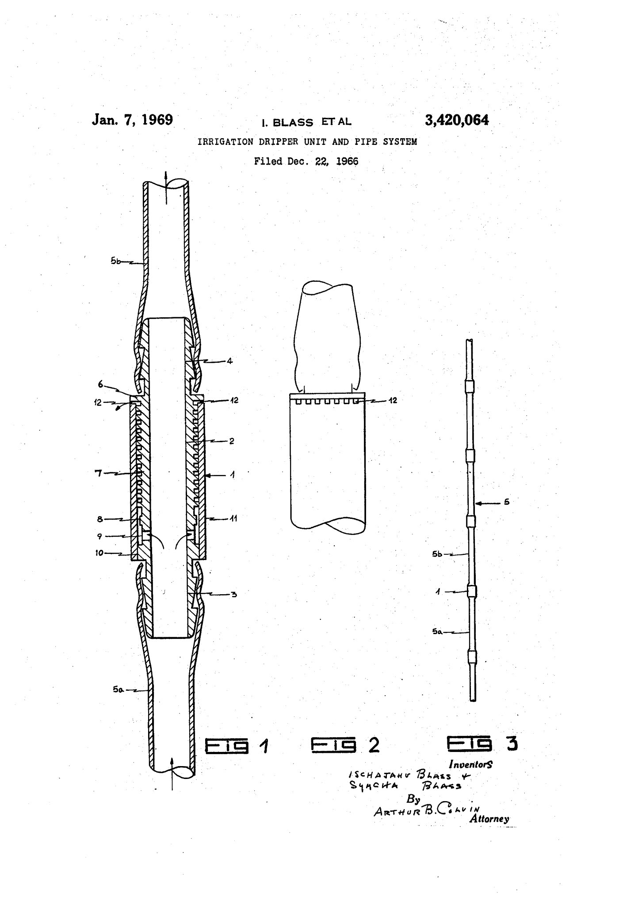
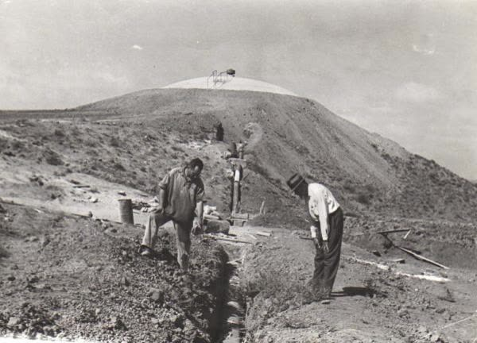
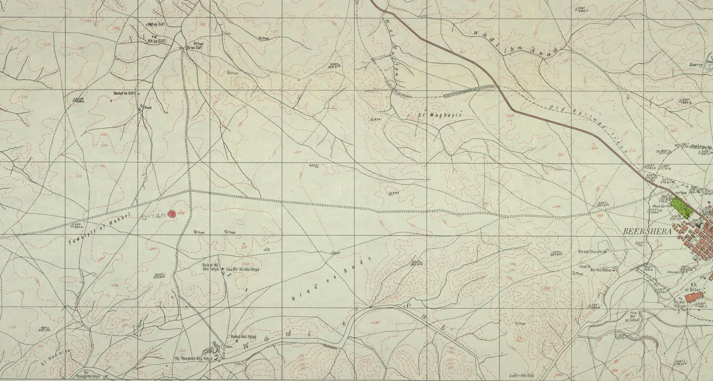
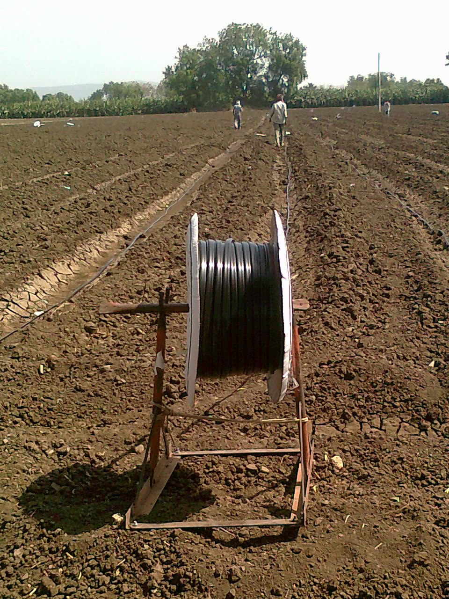
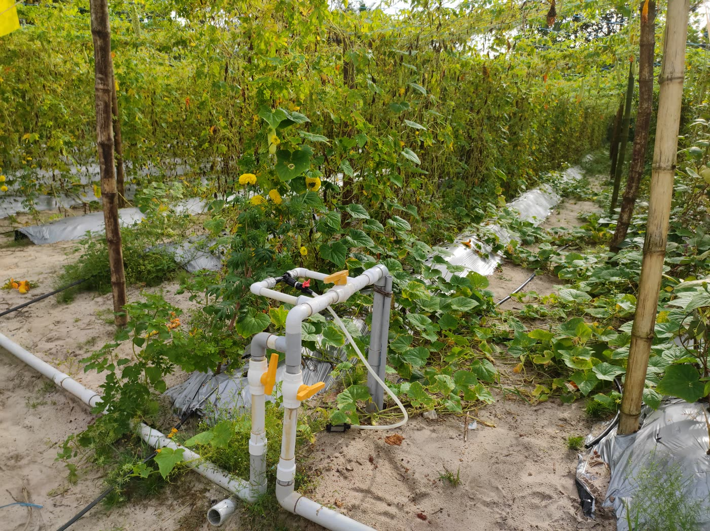
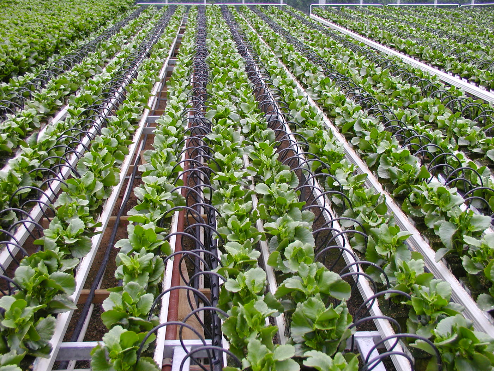
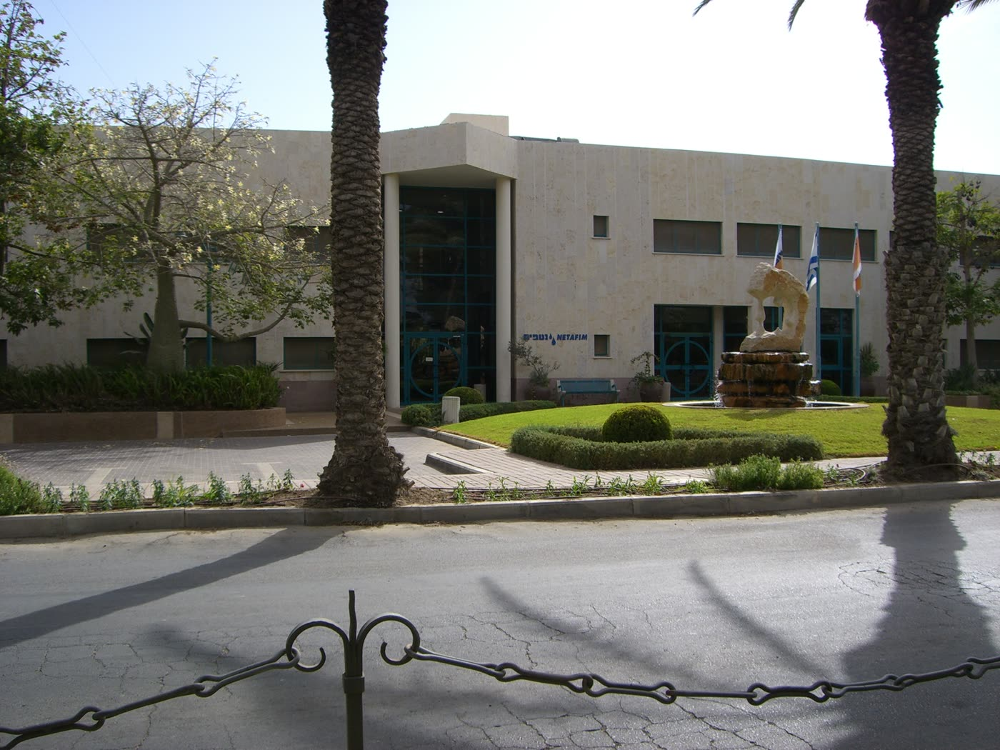
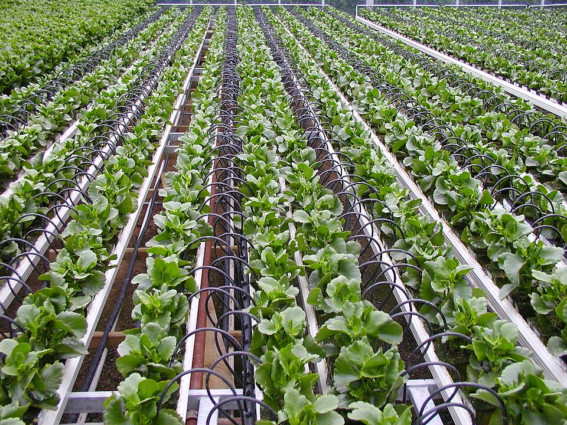

נטפים — הטפטוף · 6476 מילים · 9 תמונות · 3 סרטונים








1 · "טיפ טיפה" — שירות הסרטים הישראלי · 25:04 סרט ממשלתי מלא באורך 25 דקות, מקטלוג שירות הסרטים הישראלי. בתוכו שמחה בלאס עצמו, בגוף ראשון ומול המצלמה, מספר איך זה התחיל: "גיליתי כי חיבור של צינור המוביל מים לבית היה פגום", "כאן מצאתי עץ שהושקה בלא הפסדי התאדות". הסרט גם מראה את המערכת עובדת בשדה, ואת ההשקיה במים מליחים ובמי קולחין. ⚠ המספרים שבפסקול הם מספרי הסרט ולא נבדקו — ואחד מהם, חיסכון של 40 אחוז, מודד מים שסופקו לשדה, יחידה אחרת מששת האחוזים שבדוח ה-FAO. 2 · "אקזיט של טפטפות" — כתבת חדשות, 9.8.2017
אשון ומול המצלמה, מספר איך זה התחיל: "גיליתי כי חיבור של צינור המוביל מים לבית היה פגום", "כאן מצאתי עץ שהושקה בלא הפסדי התאדות". הסרט גם מראה את המערכת עובדת בשדה, ואת ההשקיה במים מליחים ובמי קולחין. ⚠ המספרים שבפסקול הם מספרי הסרט ולא נבדקו — ואחד מהם, חיסכון של 40 אחוז, מודד מים שסופקו לשדה, יחידה אחרת מששת האחוזים שבדוח ה-FAO. 2 · "אקזיט של טפטפות" — כתבת חדשות, 9.8.2017 · 2:54 שלוש דקות מקיבוץ חצרים, יומיים אחרי ההודעה על מכירת החברה שהוא הקים — וכחצי שנה לפני שהעסקה הושלמה בפועל. הכתב הולך לחדר האוכל לשאול איך מרגישים, ומקבל תשובות שהן ההפך הגמור מ"אקזיט": "אנחנו ממשיכים לקום
הושלמה בפועל. הכתב הולך לחדר האוכל לשאול איך מרגישים, ומקבל תשובות שהן ההפך הגמור מ"אקזיט": "אנחנו ממשיכים לקום לבוקר כמו שקמנו אתמול"; "אני פה, מה? לא יצאתי לשום מקום". בין לבין נראים תצלומים ישנים, ואחד מן הוותיקים עומד מול תצלום של צינור המים ואומר: "היינו כפסע לעזוב את המקום הזה." ⚠ המספרים שבכתבה הם של הכתב, והוא עצמו מסייג אותם. 3 · אות המובילות לנטפים־מגל, ספטמבר 2015 · 8:13 סרטון שהוזמן לרגל קבלת אות מהתאחדות התעשיינים. הוא כאן בשל דבר אחד: הוא מתעד את קיבוץ מגל, השותף השני שנעדר כמעט מכל סיפור על הטפטוף. ממנו למדנו שמפעל נטפים־מגל קם ב-1974, שהעסיק כ-350 עובדים ב-2015, וכ-
netafimמעש: הטפטוף — מקיבוץ חצרים לחקלאות העולם · מזהה 17f87f35
נכתב: 22.8.2026 · שלב ה' · העושה
מקור העובדות: journal.md בלבד · המבנה: spec.md · התמונות: images.md
הדף הקיים באתר אינו מקור ולא נקרא.
כיצד לקרוא את הטיוטה: אחרי כל משפט עובדתי מופיע בסוגריים המזהה
של הממצא שממנו נולד. משפט שאינו נושא ממצא מסומן ‹קישור› —
כלומר הוא קושר, מסכם או מנסח, ואינו טוען עובדה חדשה.
אין משפט יתום. הסוגריים יורדים בהגהה הסופית ועוברים לשכבת
המקורות שבתחתית הדף.
טפטפת אינה חור בצינור. ‹קישור›
בתוך חתיכת הפלסטיק שמחברת שני קטעי צינור רץ חריץ הליקוני ארוך,
והחיכוך לאורכו מוריד את לחץ המים עד שבקצה יוצאת טיפה. ‹מ-003›
רכס פנימי שאינו נוגע בדופן שמולו עוצר בדרך את החול. ‹מ-004›
את הפתרון הזה רשמו בפטנט אמריקאי שני ממציאים, ישעיהו בלאס
ושמחה בלאס, והפטנט ניתן ב-7 בינואר 1969. ‹מ-001, מ-002›
הייצור התחיל בקיבוץ חצרים שבנגב בינואר 1966, ולפי עדותו של נתי
ברק, חבר הקיבוץ, כל שנדרש לקנות היה מכונית ומכונת הזרקת פלסטיק. ‹מ-013, מ-014›
מאותו מקום פנוי במבנה קיים צמחה נטפים, חברה שמכירותיה הסתכמו
ב-855 מיליון דולר בשנת הכספים שהסתיימה ב-31 בדצמבר 2016, וב-7
בפברואר 2018 הושלמה מכירת 80 אחוז ממנה לתאגיד מקסיקני לפי שווי
מיזם כולל של 1.895 מיליארד דולר; עשרים האחוזים הנותרים נשארו
בידי הקיבוץ. ‹מ-013, מ-046, מ-042›
הטפטפת גם לא קפאה בפטנט אחד — עשור אחרי בלאס המשיכו לפתח אותה
ממציאים אחרים, בחברה אחרת. ‹מ-097›
וקנה המידה, לפני שיתנפח: בטבלת ICID רשומה ישראל ב-170,000
הקטר מיקרו-השקיה — שנת דיווח 2000 — שהם כאחוז אחד מסך הטבלה, ולפי
דוח FAO המסתמך על נתוני ICID לשנים 1993–2000 **להמטרה יישום גדול
בהרבה מזה של מערכות הטפטוף**, למעט קפריסין, ישראל וירדן. ‹מ-036, מ-034›
ומה שקשה יותר לומר: דוח של ארגון המזון והחקלאות של האו"ם משנת
2017 קובע ש"טכנולוגיית טפטוף והמטרה מתקדמת" אכן מעלה את שיעור
המים שמגיעים לצריכת הגידול מ-50–55 אחוז ליותר מ-80 אחוז — ובאותה
נשימה, שבחשבון ברמת אגן ההיקוות צריכת המים בהשקיה נוטה לעלות
ולא לרדת. ‹מ-091, מ-077›
⚠ בדיקת שלושת תנאי הטריילר (הכרעה 6 ב-spec.md):
א. החברה נמכרה — נאמר במפורש, עם התאריך ועם החלק שנשאר. ✅
ב. הוויכוח על המים — המשפט האחרון, זה שהכותרת ויתרה עליו. ✅
ג. בלי מספר ללא יחידה — "855 מיליון דולר" נושא *מכירות ושנת
כספים; "1.895 מיליארד" נושא שווי מיזם כולל בעסקה*; "80 אחוז" ו-"20
אחוז" נושאים חלק בבעלות; "50–55 אחוז" ו-"80 אחוז" נושאים
שיעור המים שהומרו לצריכת הגידול; "170,000 הקטר" נושא *שטח
מיקרו-השקיה בישראל, שנת דיווח 2000; "אחוז אחד" נושא חלק מסך
טבלת ICID*. ✅
ד. ‹נוסף בבדק-הבית› הטריילר מונה תשעה משפטים (המותר:
3–10), מזכיר את שם החברה, ואינו מותיר את הקורא התם עם "טפטוף
אינו חוסך מים" בלי המספר ההנדסי שלצידו.
ה. ‹נוסף בסבב התיקון — הערה 22› הכותרת אומרת "תעשייה
עולמית", והטריילר עצמו מוסר עכשיו את קנה המידה במקום להשאיר
אותו לקטע ז'. ✅
הפטנט מתאר יחידה שבנויה משני גלילים — חיצוני ופנימי, שנכנס לתוכו
בהידוק — ובין פני השטח שלהם נוצרת "תעלה רציפה" שדפנותיה הן חריץ
רציף החתוך בשפתו של אחד מהם. ‹מ-003›
המים נכנסים בלחץ, זורמים לאורך התעלה המפותלת, והחיכוך מוריד את
הלחץ עד שבקצה מסוגלת לצאת טיפה במקום סילון. ‹מ-003›
בתוך היחידה יש רכס — במספור השרטוט, פריט 8 — שאינו מגיע עד הדופן
שמולו אלא נעצר במרווח צר ממנה, וכלשון הפטנט הוא "משמש אפוא
כמסנן": החול והגרגרים שבמי האספקה, שאחרת היו חוסמים את התעלה
ההליקונית הדקה, נעצרים לפניו. ‹מ-004›
היחידות אינן אביזר שנתלה על הצינור מבחוץ; הפטנט קובע שהן "מהוות
חלק אינטגרלי של צינור האספקה", וזרם המים הראשי עובר מיחידה
ליחידה. ‹מ-005›
בסרט התיעודי "טיפ טיפה" של שירות הסרטים הישראלי, שצולם לא יאוחר
מ-1982, ניסח זאת הקריין במילה אחת: "נפתרה הבעיה בעזרת מבוך בתוך
הצינורית". ‹מ-073, מ-070›
המילה הזאת מדויקת יותר מכל תיאור אחר של החפץ, והיא ניתנת לבדיקה
מול לשון הפטנט משנת 1966. ‹קישור›
הרעיון להוציא מים לאט מצינור לא היה חדש כשבלאס הגיש את בקשתו. ‹קישור›
בעמוד האחרון של הפטנט, תחת הכותרת "References Cited", ציטט בוחן
הפטנטים האמריקאי ארבעה מסמכי קדימות: פטנט אמריקאי מינואר 1874,
פטנט אמריקאי ממרס 1888, פטנט בריטי ממאי 1939, ופטנט אמריקאי
מאפריל 1961. ‹מ-006›
משמעות הדבר היא שמשרד הפטנטים עצמו הכיר בכך שהתחום קדם לבלאס,
והפטנט ניתן על הפתרון הספציפי ולא על הרעיון להשקות בטיפות. ‹מ-006›
מה שלא היה פתור הוא הפער שהפטנט עצמו מצביע עליו: פתח קטן די הצורך
כדי לטפטף הוא גם פתח קטן די הצורך כדי להיסתם מן החול שבמים. ‹מ-004›
הפתרון היה להאריך את הדרך במקום להקטין את החור, ולשים בדרך מלכודת
לחול. ‹מ-003, מ-004›
לפי עדותו של נתי ברק, לרעיון היה צריך גם חומר: "כדי לבנות מכשיר,
הוא היה צריך לחכות עד שהפלסטיק ייעשה נפוץ". ‹מ-017›
זו עדות של חבר הקיבוץ שהקים את החברה, והיא נמסרה בשנת 2020 על
אירועים משנות ה-30; לא מצאתי לה אישוש חיצוני. ‹מ-017›
לפי מדריך האוסף של ספריות אוניברסיטת סטנפורד, שמחה בלאס נולד
בשנת 1897 בוורשה, השני מבין חמישה ילדים, ולמד במכון הטכני-מכני
ואוולברג-רוטבנד. ‹מ-062›
לפי הארכיון הציוני המרכזי, "שמחה בלאס היה מהנדס מכונות בהכשרתו
בעת הגירתו לארץ ישראל בשנת 1930", ו"החיים הובילו אותו לעסוק
דווקא במים". ‹מ-023›
על עצמו כתב בספר הזיכרונות שלו: "על השקאה לא ידעתי ולא כלום"
— באיות המקורי, "השקאה". ‹מ-024›
במשך רוב שנות ה-20 שקד על מכשיר לשתילת חיטה, ורשם עליו פטנטים
בצרפת, בדנמרק, בשווייץ, באוסטריה, בפינלנד, בקנדה ובאוסטרליה בין
1922 ל-1930. ‹מ-008›
לפי סטנפורד, הוא לא הצליח לשווק את ההמצאה למשקיעים וליצרנים,
והתאכזב במיוחד מכך שלא נקלטה בארץ ישראל. ‹מ-064›
משם פנה למים: הוא היה המהנדס שעליו הוטלה האחריות לתכנון מפעלי
המים של חברת "מקורות" עם הקמתה, גויס לתפקיד בידי לוי שקולניק
(אשכול), עמד בראש הוועד הארצי לתכנון מפעל המים הארצי, ושימש יועץ
ראש הממשלה לענייני מים והמנכ"ל הראשון של תה"ל. ‹מ-026›
בסתיו 1946 היו הוא וצוותו מעורבים בתכנון אספקת המים ל-11 הנקודות
שהוקמו אז בנגב, ומפת הפרויקט שמורה באוסף המפות של הארכיון
הציוני. ‹מ-027›
אותו ארכיון, שאינו מקור עוין, כותב גם שבמהלך שנות פעילותו "נודע
גם כאיש מחלוקת", ושחייו המקצועיים היו "רוויים מתחים ומחלוקות" —
חלקם מקצועיים וחלקם על רקע אישי. ‹מ-025›
שם ספרו שלו, "מי מריבה ומעש", אומר את אותו הדבר. ‹מ-067›
ואשר לסיפור המפורסם — העץ שגדל ליד הצינור הדולף. ‹קישור›
המקור המוקדם ביותר שהצלחתי לפתוח לסיפור הזה הוא בלאס עצמו, מדבר
אל המצלמה בסרט של שירות הסרטים הישראלי: "בתחילת שנות ה-30 עברתי
ליד ביתו של ידיד. היו נטועים שם עצים, וביניהם בלט אחד העצים
בגודלו. כאשר חיפשתי את הסיבה לתופעה, גיליתי כי חיבור של צינור
המוביל מים לבית היה פגום, ומחיבור זה טפטפו מים... כאן מצאתי עץ
שהושקה בלא הפסדי התאדות". ‹מ-071›
בלאס נפטר ב-1982, ולכן הריאיון צולם לכל המאוחר באותה שנה — כלומר
כחמישים שנה אחרי המאורע שהוא מתאר. ‹מ-063, מ-070›
הנוסח שמתגלגל היום באנגלית אינו זהה לגרסה הזאת: בו חקלאי מפנה
את תשומת לבו של בלאס לעץ, ובו בלאס חופר ומגלה אזור רטוב
תת-קרקעי. ‹מ-072›
ועל הנוסח האנגלי הזה עצמו אני חייב לומר מה שאיני יכול לומר:
לא פתחתי לו מקור בדרגה קבילה. הוא מופיע בעשרות אתרי גינון,
בלוגים וויקיפדיה בנוסח כמעט זהה מילה במילה — סימן להעתקה
משרשרת אחת. ‹מ-072›
לכן הוא מובא כאן כנוסח שרווח ברשת, ולא כגרסה שיש לה מקור. ‹מ-072›
בגרסה שבפיו של בלאס עצמו הוא מבחין בעץ בכוחות עצמו, אינו חופר,
והתובנה היא הפוכה כמעט — שהאדמה סביב העץ הייתה יבשה, ולכן
לא היו הפסדי התאדות. ‹מ-071, מ-072›
בגרסה שלישית, מפי נתי ברק ב-2020, הדבר קרה בחדרה והצינור היה
צינור מתכת בקוטר שלושה רבעי אינץ'. ‹מ-016›
ועוד דבר על התיעוד. ‹קישור›
מאמר סקירה שלם על שמחה בלאס, פרי עטו של היסטוריון, באתר הארכיון
הציוני המרכזי, אינו מזכיר ולו פעם אחת "טפטוף", "חצרים" או
"נטפים"; ספירה בקוד המקור של הדף מחזירה אפס לכל שלוש המילים. ‹מ-030›
באוסף המסמכים האישיים של בלאס בסטנפורד, שנרכש ב-2004 ומכיל חומר
עד 1967, אין ולו מופע אחד של drip, trickle, Netafim אוHatzerim. ‹מ-068, מ-094›
שני ארכיוני המסמכים הגדולים של האיש עוסקים במשק המים הלאומי, לא
בטפטוף. ‹מ-030, מ-068›
קיבוץ חצרים הוקם ב-1946, ולפי עדותו של נתי ברק באותו לילה שבו
הוקמו 11 קיבוצים בנגב. ‹מ-022, מ-049›
לפי אותה עדות, אנשי המקום גילו שהקרקע מלוחה מאוד ושקלו לנטוש
אותה, והממשלה עודדה אותם להישאר. ‹מ-022›
וכאן ראוי לעצור לפני שהקורא מחבר בעצמו: בקטע ב' נכתב שבלאס
תכנן את אספקת המים ל-11 הנקודות, וכאן נכתב שחצרים קמה באותו
לילה. אין בידיי מקור שאומר שקו המים של בלאס הגיע לחצרים,
ולכן הדף אינו אומר שבלאס הביא מים לקיבוץ הזה. ‹מ-027, מ-022›
בכתבת חדשות ששודרה ב-9 באוגוסט 2017, יומיים אחרי ההודעה על
העסקה, עמד אחד הוותיקים מול
תצלום ישן של צינור המים ואמר: **"היינו כפסע לעזוב את המקום
הזה."** ‹מ-103›
דוברו לא זוהה בשמו בכתבה, ולכן איני מייחס את המשפט לאיש. ‹מ-103›
לפי ברק, בלאס דיבר עם כמה קיבוצים לפניהם ואיש לא האמין שהטכנולוגיה
תעבוד; אמרו לו שאי-אפשר לגדל עצים בוגרים בטפטוף איטי לצידם. ‹מ-018›
העדות אינה נוקבת בשמות הקיבוצים ולא בתאריכים, ולא מצאתי לה מקור
עצמאי. ‹מ-018›
מה שקרה בחצרים, לפי אותה עדות, מתחיל בכך שהקיבוץ חיפש תעשייה
והטיל על הגזבר — שממילא נסע העירה — לאתר אחת: **"בסופו של דבר,
אורי ורבר, הגזבר שלנו, פגש את שמחה בלאס."** ‹מ-011›
עוד לפני שידעו איזו תעשייה, קבעו שלושה קריטריונים: שלא תדרוש
השקעה גדולה, כי לא היה הון; שלא תדרוש עבודה רבה, כי חל בקיבוץ
כלל שרק חברים יעבדו בו ואסור להעסיק מי שאינו חבר; ושתהיה קשורה
לחקלאות. ‹מ-012›
הרעיון הובא לאספה הכללית, והמציג הצביע על כך שההשקעה קטנה
והסיכון קטן: "היינו צריכים לקנות מכונית ומכונת הזרקת פלסטיק"
— ואת שתיהן אפשר היה למכור מחדש אם הדבר ייכשל. ‹מ-013›
מקום פנוי היה באחד המבנים הקיימים, ולכן לא נדרשה בנייה. ‹מ-013›
ההסכם עם הממציא נחתם ונטפים הוקמה ב-1965 — שנה שמופיעה גם בהודעת
הרכישה של מקסיקם ב-2018 וגם בהודעת מכון המים של שטוקהולם
ב-2013. ‹מ-014, מ-043, מ-059›
שלושת המסמכים אינם שלושה עדים: כולם שואבים בסופו של דבר מן החברה
ומן הקיבוץ, ומסמך רשמי בן-זמנו משנת 1965 לא הגיע לידיי. ‹מ-014, מ-043, מ-059›
"בינואר 1966 התחלנו לייצר טפטפות וקווי טפטוף", מכרו תחילה
בישראל ורק אחר כך בעולם. ‹מ-014›
הלקוח הראשון היה הקיבוץ עצמו. ‹מ-015›
לפי ברק, ההתקנה הראשונה נעשתה במטעים שלהם, ומנהל המשק בא והציע
לשמור את הטפטוף בסוד ולהחזיק ביבול הטוב בשוק; העמדה שגברה
הייתה שהם פותחים עסק ורוצים שיגדל, ולכן התחילו למכור. ‹מ-015›
זו עדות יחידה, מפי בעל עניין, חמישים וחמש שנה אחרי המעשה, ולא
מצאתי לה אישוש שני. ‹מ-015›
המספר שנלווה לה באותה עדות — "כמעט הכפלנו את היבול בשנה" — אינו
נכנס לכאן כנתון, מפני שאין לצידו גידול, שנה או מדידה. ‹מ-015›
בראש הפטנט האמריקאי 3,420,064, שכותרתו "Irrigation dripper unit
and pipe system", רשומים שני ממציאים: `Ischajahu Blass and
Symcha Blass`, שניהם באותה כתובת ברחוב מנן 26 בתל אביב, ושמו של
ישעיהו מופיע ראשון. ‹מ-001›
המסמך הרשמי אינו מכיר בשמחה בלאס לבדו. ‹מ-001›
מי הם זה לזה — הפטנט אינו אומר. ‹מ-001›
"אנציקלופדיה לחלוצי הישוב ובוניו" של דוד תדהר פותחת בכרך ז' ערך
בשם "המהנדס שמחה בלאס", וחותמת אותו בשורה אחת: "בניו; יצחק,
ישעיהו, חיים". ‹מ-105›
הכרך נדפס ב-1956, עשר שנים לפני הגשת בקשת הפטנט, ולכן רשימת הבנים
אינה יכולה להיות הד של סיפור הטפטוף. ‹מ-105›
ומה שמחבר בין השורה ההיא לבין המסמך הזה — אותו שם, אותו עשור,
ואותה כתובת — הוא חיבור שאני עושה, לא משפט שכתוב במקור. ‹קישור›
תדהר אינו מזכיר טפטוף ואינו מזכיר פטנט. ‹מ-105›
באותו עמוד מודפסים שלושה תאריכים שאין לאחדם: הבקשה הישראלית הוגשה
ב-17 בפברואר 1966, הבקשה האמריקאית ב-22 בדצמבר 1966, והפטנט ניתן
ב-7 בינואר 1969. ‹מ-002›
אף אחד משלושתם אינו "שנת ההמצאה", ואף אחד מהם אינו שנת הקמת
נטפים. ‹מ-002›
באינטרנט חוזרת טענה שב-1959 פיתחו בלאס וחצרים ורשמו את הטפטפת
המעשית הראשונה. ‹מ-007›
בשתי שאילתות על שם הממציא במאגר Google Patents, שהחזירו יחד 18
רשומות, אין ולו רשומת השקיה אחת שקדמה לקדימות 17.2.1966. ‹מ-010›
זו בדיקה שלילית מסויגת ולא הכרעה: המאגר אינו מכסה בהכרח פטנטים
ישראליים משנות ה-50, ולכן היעדר תוצאה אינו הוכחה שאין פטנט כזה. ‹מ-010›
מה שנקבע כאן הוא רק זה: **"1959" אינה נכתבת כשנת פטנט כל עוד לא
נמצא מספר פטנט או מסמך רשמי.** ‹מ-007, מ-010›
שני פרטים נוספים בתיק הפטנטים ראויים לציון. ‹קישור›
בכל ששת הפטנטים שבתיק ההשקיה — משנת 1966 ועד ה-Reissue מ-1973 —
הבעלים הרשום הוא אדם פרטי — שמחה בלאס או ישעיהו בלאס — ואין ולו פטנט
אחד הרשום על שם קיבוץ חצרים או על שם נטפים. ‹מ-009›
ולפי העדות של ברק, הייצור התחיל בינואר 1966, כלומר חודש לפני
הגשת בקשת הפטנט הישראלית שבידיי. ‹מ-014, מ-002›
אני רושם את הפער ואיני סוגר אותו. ‹קישור›
חיפוש במאגר Espacenet על שמו של רפי מהודר דיווח 33 תוצאות;
עמוד התוצאות הראשון, היחיד שקראתי, מציג 25 רשומות, ורק עליהן
מדובר כאן. ‹מ-097›
הן מספרות סיפור שאינו מופיע בגרסה המקובלת. ‹מ-097›
תאריכי הקדימות שבהן נעים בין 26 באוקטובר 1976 לבין 8 באוקטובר
1998, והמגישה העיקרית ב-22 מתוך 25 היא חברה בשם
Hydro Plan Eng Ltd. ‹מ-097›
לצד שמו של מהודר חוזר שם נוסף, עודד וינקלר. ‹מ-097›
הכותרות עוסקות באותה בעיה בדיוק — Irrigation emitter unit ·Drip irrigation system · Irrigation system flushing valve ·Flow emitter units moulds for use in the manufacture thereof. ‹מ-097›
בשתיים מן הרשומות מופיעים קיבוץ חצרים ונטפים כמגישים-שותפים
לצד Hydro Plan, בקדימויות מ-1977 ומ-1979. ‹מ-097›
מה שהרשומות מוכיחות הוא מי הגיש, מה ומתי; הן אינן מוכיחות מה
הייתה תרומתו היחסית של כל אדם, ולא אם המוצר המסחרי נשען דווקא על
הפטנטים האלה. ‹מ-097›
ובכל זאת די בהן לקבוע דבר אחד: הטפטפת לא קפאה בפטנט של 1966. ‹מ-097›
גם הבעלות לא נשארה של קיבוץ אחד. ‹קישור›
לפי סרטון שהוזמן בידי החברה ב-2015, מפעל נטפים־מגל הוקם והחל
לפעול ב-1974; באותו סרטון, כלומר ב-2015, הוא העסיק כ-350
עובדים ומהם כ-80 חברי קיבוץ מגל. ‹מ-099›
כמה עובדים היו בו ב-1974 — אין במקור, ואיני משער. ‹מ-099›
בהודעת המכירה של קרן פרמירה ב-2017 מונה שותף בקרן את שני
הקיבוצים במפורש — "קיבוץ חצרים וקיבוץ מגל" — כמי שהשותפות
עימם ועם הנהלת נטפים היא שהפכה את החברה לגלובלית. ‹מ-040›
הודעת השלמת העסקה, חצי שנה אחר כך, מזכירה רק את חצרים. ‹מ-042›
לפי ברק, חברת הבת הראשונה מחוץ לישראל נוסדה רק ב-1981, בפרזנו
שבקליפורניה. ‹מ-020›
בין תחילת הייצור לבין חברת הבת הראשונה בחו"ל עברו חמש-עשרה שנה. ‹מ-014, מ-020›
הוועדה הבינלאומית להשקיה וניקוז (ICID) מפרסמת טבלה של שטחי המטרה
ומיקרו-השקיה בעולם. ‹קישור›
וכאן אני חייב לומר משהו על עצמי לפני שאני נוקב במספר. ‹קישור›
בשלב המחקר קבעתי לעצמי כלל הפוך: לא לסכם את הטבלה הזאת, מפני
שהיא מערבת שנות דיווח ומפני שהיא סותרת את עצמה — מרוקו, למשל,
מופיעה בטבלה הראשית ב-600,000 הקטר מיקרו-השקיה לשנת 2020, ובטבלת
המדינות המתפתחות שבאותו מסמך ב-8,250 הקטר לשנת 2014. ‹מ-038›
בסופו של דבר סיכמתי בכל זאת, **ואני אומר זאת במפורש במקום להעלים
את שינוי הדעת.** ‹קישור›
מה שהצדיק את השינוי הוא שהמספר נכנס לכאן **כרצפה מוצהרת ולא
כסך-הכול העולמי** — וכל מה שמתערער בטבלה מושך את הסכום כלפי מטה,
לא כלפי מעלה. ‹קישור›
הטבלה הראשית מונה 47 שורות מדינה, ומהן **43 בלבד נוקבות במספר
מיקרו-השקיה**; יפן, סודן ונפאל רשומות במקף, ולגאורגיה אין נתונים
כלל. ‹מ-090›
חיבור 43 השורות האלה נותן כ-16.5 מיליון הקטר (בחשבון מדויק
16,500,154 — וזהו תוצר של חיבור, לא מדידה שמישהו ביצע), כאשר שנות
הדיווח נעות בין 1999 ל-2020. ‹מ-090›
בטבלה הזאת ישראל רשומה ב-170,000 הקטר מיקרו-השקיה — **שנת
הדיווח שלה 2000** — שהם כאחוז אחד מסך הטבלה. ‹מ-090, מ-036›
חמש המדינות הגדולות בעמודה הזאת הן סין (5,270,000 הקטר, שנת דיווח
2017), ארצות הברית (1,978,879, שנת הדיווח בתא היא "2017&2013"
ולא שנה אחת), הודו (1,897,280, 2010), ספרד (1,793,000, 2015)
וטורקיה (1,120,000, 2020) — וישראל אינה ביניהן. ‹מ-036›
בסין לבדה יש פי 31 שטח מיקרו-השקיה מאשר בישראל כולה — והשוואה זו
מעמידה שורת דיווח משנת 2017 מול שורת דיווח משנת 2000. ‹מ-036›
ובכל זאת יש עמודה שבה ישראל חריגה, ואינה זו. ‹קישור›
באותה טבלה, שנת דיווח 2000, 99.6 אחוז מהשטח המושקה בישראל מושקה
בהמטרה או במיקרו-השקיה; להשוואה, סין 13.7 אחוז, הודו 8.0 אחוז,
ארצות הברית 68.6 אחוז. ‹מ-037›
הניסוח המדויק הוא לא "הכי הרבה טפטוף", אלא **הכי מעט שדה שאינו
מושקה בשיטה מודרנית**. ‹מ-037›
נתון ישראל בטבלה הבינלאומית הזאת הוא משנת 2000, כלומר בן רבע
מאה. ‹מ-036›
בדוח של ארגון המזון והחקלאות של האו"ם, המסתמך על נתוני ICID לשנים
1993–2000, נכתב שסך השטח המושקה במיקרו-השקיה בעולם הוא 3.2 מיליון
הקטר, "המייצגים אחוז אחד מכלל השטחים המושקים בעולם", אחרי גידול
של יותר מפי שישה בעשרים השנים שקדמו. ‹מ-031›
אותו דוח קובע ש"להמטרה יישום גדול בהרבה מזה של מערכות הטפטוף,
למעט קפריסין, ישראל וירדן", וש"כ-20 מיליון הקטר בעולם מושקים
היום בהמטרה". ‹מ-034›
ומה בתוך כל זה הוא נטפים. ‹קישור›
המספר הפיננסי המבוקר הראשון הוא מהודעת מקסיקם משנת 2017: מכירות
של 855 מיליון דולר לשנה שהסתיימה ב-31 בדצמבר 2016. ‹מ-046›
בדיווח הכספי של אורביה לרבעון הרביעי של 2025, שבו מדווחות גם
תוצאות השנה כולה, רשם מגזר החקלאות המדייקת (נטפים) **מכירות
שנתיות של 1,095 מיליון דולר לשנת 2025** — לעומת 1,038 מיליון
דולר ב-2024 — ורווח תפעולי שנתי של 27 מיליון דולר, שהם כשני
אחוזים וחצי מן המכירות; המגזר מהווה 14.0 אחוז מהכנסות
אורביה. ‹מ-087›
שתי שנות כספים מלאות מעמידות זו מול זו את 855 מיליון הדולר של
2016 ואת 1,095 מיליון הדולר של 2025: גידול של כ-28 אחוז בתשע
שנים, בלי תיקון אינפלציה. ‹מ-046, מ-087›
לפי עדותו של נתי ברק ב-2020, לנטפים מפעלי ייצור באוסטרליה, ברזיל,
קליפורניה, צ'ילה, סין, הודו, מקסיקו, פרו, דרום אפריקה, ספרד
וטורקיה, וכן שלושה מפעלים בישראל — כלומר 12 מדינות ייצור. ‹מ-095›
בהודעת מקסיקם משנת 2017 מופיעים שלושה מספרים שונים באותה פסקה:
נוכחות מקומית ביותר מ-30 מדינות, 17 מפעלים, ומכירות ביותר מ-110
מדינות. ‹מ-047›
"110 מדינות" הוא מספר מכירות ולא מספר נוכחות, והוא טענת החברה
על עצמה; הוא מופיע בשלושה מסמכים שונים אבל מקורו אחד — נוסח
ה-boilerplate של נטפים. ‹מ-047, מ-048, מ-059›
בשנת 2026 נעלמה מדף ה-About של החברה ההפרדה בין נוכחות למכירות,
והנוסח הפך ל"4,500 מאיתנו, פרוסים ב-110 מדינות". ‹מ-089›
טענה נוספת שהחברה חוזרת עליה היא "יותר מעשרה מיליון הקטר" קרקע
שהושקו בטפטוף. ‹מ-055›
המספר הזה הופיע ב-2013 בהודעת הפרס של מכון המים של שטוקהולם, בלי
מקור ובלי שיטת מדידה, והוא מופיע באותה לשון בדיוק בדף ה-About של
נטפים ב-2026 — שלוש-עשרה שנה, אותו מספר. ‹מ-055, מ-089›
ואי-אפשר להעמיד אותו מול טבלת ICID כאילו הם אותה יחידה: החברה
סופרת שטח מצטבר לאורך 60 שנה, וטבלת ICID מודדת שטח מותקן בנקודת
זמן. ‹מ-090›
ב-2017 פרסם ארגון המזון והחקלאות של האו"ם דוח ששאלתו בכותרת:
האם טכנולוגיית השקיה משופרת חוסכת מים. ‹קישור›
בהקדמת ההנהלה שלו נכתב: **"ההנחה המסורתית הייתה שהעלאת יעילות
ההשקיה באמצעות אימוץ טכנולוגיות מודרניות, כמו השקיה בטפטוף,
מובילה לחיסכון משמעותי במים, ומשחררת את המים שנחסכו לסביבה או
לשימושים אחרים. הראיות מהמחקר וממדידות בשדה מראות שלא כך הדבר.
התועלת בקנה המידה המקומי, ברמת החווה, עשויה להיראות דרמטית, אבל
כאשר מחשבים אותה כראוי ברמת האגן, סך צריכת המים בהשקיה נוטה לעלות
במקום לרדת."** ‹מ-077›
אותה הקדמה מוסיפה שהפוטנציאל להעלות את פריון המים — "יבול רב יותר
לטיפה" — הוא "צנוע למדי" בגידולים החשובים ביותר. ‹מ-077›
הדוח אינו אומר שהטפטוף אינו עובד בשדה, ובאותו פרק הוא מסביר בדיוק
מה כן קורה. ‹קישור›
**"להצפה מנוהלת היטב יש בדרך כלל יעילות של 50–55 אחוז — כלומר
בערך מחצית מהמים מומרים לצריכת הגידול — ואילו טכנולוגיית טפטוף
והמטרה מתקדמת תעבור בקלות 80 אחוז, גם בהתחשב בשטיפת מלחים."** ‹מ-091›
זו הצלחה הנדסית שאין עליה עוררין, והיא נמדדת בידי גוף שאינו
מוכר טפטפות. ‹קישור›
ומיד אחריה כותב הדוח: **"באורח פרדוקסלי, בעוד שהקצאות המים
המתוקים לחקלאות ירדו, מערכות ההיי-טק אפשרו לצריכת המים של הגידולים
בסקטור לעלות, וזה היה הבסיס לגידול בתפוקה."** ‹מ-091›
שתי האמירות נכונות בו-זמנית: יעילות האספקה עלתה, וצריכת המים
במשק לא ירדה. ‹מ-091›
על המדידות עצמן כותב הדוח: **"סקירה זו מלמדת, במידה מסוימת של
הפתעה, שיש מעט מאוד דוגמאות לתיעוד קפדני של השפעות ההשקיה
המתקדמת, בעוד שיש דוגמאות רבות לפרויקטים ולתוכניות שמניחים שמים
ייחסכו... מחקרים שכן קיימים הם או חסרי הכרעה, או — לעיתים קרובות
יותר — מראים שצריכת המים למעשה גדלה (כפי שהמדע היה חוזה) כאשר
מערכות ההשקיה שודרגו, ושהפריון ליחידת מים שנצרכה נשאר פחות או
יותר קבוע."** ‹מ-078›
היוצא מן הכלל, לפי אותה סקירה, הוא מטעים, שהם "המועמדים המבטיחים
ביותר לחיסכון אמיתי במים": שם נמצאו **הפחתות ממוצעות של כשישה
אחוזים** בצריכת המים בהשוואה בין שדות בהשקיית הצפה לשדות בטפטוף —
ויחד עם עלייה בתפוקה. ‹מ-078›
**ועל ששת האחוזים האלה צריך לומר ארבעה דברים, שאם משמיטים אותם
המספר גדל.** ‹קישור›
האחד — זה אינו ממצא של "מטעים" בכלל, אלא של מחקר יחיד:
"השפעות השקיה בטפטוף על שיעורי אֶוַפּוֹטְרַנְסְפִּירַציה בעמק סן חואקין
שבקליפורניה" (Thorenson, Lal and Clark, 2013). ‹מ-078›
השני — "כשישה אחוזים" הוא הנוסח שבתקציר. בגוף הדוח, בשלושה
מקומות, הנוסח הוא "פחות משישה אחוזים": "כמות המים שנצרכה
דרך אֶוַפּוֹטְרַנְסְפִּירַציה פחתה בפחות מ-6 אחוזים". ‹מ-078›
השלישי — הדוח עצמו קורא לחיסכון הזה "חיסכון דל": "מכיוון
שעצים וגפנים חושפים שטחי קרקע גדולים יחסית לשמש ישירה, הפוטנציאל
להפחית אידוי לא-מועיל הוא גבוה. ואף על פי כן ההפחתה בצריכת המים
הייתה בממוצע פחות מ-6 אחוזים." ‹מ-078›
והרביעי — ההמשך של אותו משפט: **"בגידולי שדה, שבהם החופה
סגורה ברובה, אפילו החיסכון הדל הזה אינו סביר שיהיה בר-השגה"**.
‹מ-078›
ובאותו דוח, בשתי הערות שוליים נקובות בשם, מצטט ה-FAO התכתבות עם
יצרני טפטוף בישראל. ‹קישור›
הערה 8 מיוחסת לנתי ברק, מנהל הקיימות של נטפים: **"בעוד שבגידולים
שהם גידולי 'המון' מה שאתה נותן הוא מה שאתה מקבל, אני יודע שבעצי
פרי, ענבים, ירקות וכדומה כן מקבלים 'יותר בפחות'."** ‹מ-079›
הערה 9 מיוחסת לד"ר איתמר נדב, מנהל פרויקטים במחלקת המו"פ של
נטפים: **"כאשר היבול זהה בטפטוף ובהשקיית שטח, כמות המים שנצרכת
בידי הגידול שווה."** ‹מ-079›
זו אינה ביקורת של גורם חיצוני על החברה, אלא אמירה של מהנדס מן
החברה עצמה, המובאת בשמו בתוך מסמך של האו"ם. ‹מ-079›
יש כאן ארבע יחידות מדידה שונות, ובלעדיהן כל הדיון מתמוטט. ‹קישור›
האחת — כמות המים שסופקה לשדה. השנייה — השיעור שבו המים
שסופקו הומרו לצריכת הגידול, וזהו המספר שעולה מ-50–55 אחוז ליותר
מ-80 אחוז. השלישית — כמות המים שנצרכה בפועל בידי הגידול,
וזהו המספר שירד בפחות משישה אחוזים במטעים של אותו מחקר יחיד
מקליפורניה. הרביעית — מאזן המים
של אגן ההיקוות, וזה עולה. ‹מ-078, מ-091, מ-077›
ארבע היחידות אינן ניתנות להחלפה זו בזו, ולכן אפשר לומר בלי סתירה
שהמעבר לשיטות מודרניות מעלה את שיעור ההמרה מ-50–55 אחוז ליותר
מ-80 אחוז, ובאותה נשימה שצריכת המים בפועל לאותו יבול אינה
יורדת. ‹מ-091, מ-079›
ובדיוק כאן דרוש דיוק שקל לוותר עליו: הדוח אינו מייחס את
המעבר הזה לטפטוף לבדו אלא ל"טכנולוגיית טפטוף והמטרה מתקדמת"
כאחת, ולכן גם הדף אינו רושם את שמונים האחוזים על שם הטפטפת. ‹מ-091›
כשסרט שירות הסרטים הישראלי, זה שצולם לא יאוחר מ-1982, אומר
ש"החיסכון במים גדל בכ-40 אחוז", הוא מודד מים שסופקו לשדה;
כששישה האחוזים של ה-FAO נמדדים, הם מודדים מים שנצרכו בפועל. ‹מ-075, מ-078, מ-070›
באותו כיוון — אך במסמך אחר של אותו ארגון, ולא בדוח 2017 —
מצטט FAO בפרסום Y4854E, "The adoption of water conservation
application techniques", מחקר של Vidal ואחרים משנת 2001, שקבע
שהמיקרו-השקיה **"אינה טכנולוגיית פלא: התקבלו ממנה תוצאות מצוינות
כמו גם תוצאות גרועות, והאימוץ שלה תלוי באמת ביכולת החקלאים לממן
ולהפעיל אותה, וכן בסוג ייצור הגידול."** ‹מ-033›
ולבסוף, מה שאולי הממצא המעניין ביותר בכל החומר הזה. ‹קישור›
בפרק על ישראל קובע הדוח שההצלחה הישראלית לא הייתה טכנולוגית
בלבד: **"ההקשר קריטי להישג הזה: מימיהן הראשונים, סוכנויות המדינה
הישראליות ניהלו ושלטו במים. המוביל הארצי, שהוליך מים מן הצפון
עתיר-המים יחסית אל האדמות החקלאיות הצחיחות אך רחבות-הידיים
בדרום, הייתה לו קיבולת מוגבלת, כך שגישה בלתי-מוגבלת למים להשקיה
מעולם לא הייתה אפשרות."** ‹מ-080›
המשפט הזה חשוב דווקא במה שקל להשמיט ממנו: **מה שחסם את הגישה
החופשית למים לא היה רק החלטת ממשלה, אלא גם מגבלה פיזית של צינור.** ‹קישור›
מי התהום נחשבו נכס לאומי, **"כל אספקות המים היו, ועודן, נמדדות
במונה"**, השימוש בקרקע נקבע אף הוא בידי המדינה, ומשאבי המים
"בבעלות המדינה, וניתן להשתמש בהם רק ברישיון". ‹מ-080›
הדוח אומר את הדבר הבא במפורש: **"עם זאת, כמה מרכיבים של ההישג
הזה ייחודיים לישראל, וחשוב מכך — הם תנאים מוקדמים לכך שהמודל
יעבוד במקום אחר"** — ומונה שליטה מרכזית במים עיליים ובמי תהום,
בקרה אפקטיבית על הביקוש באמצעות מכסות נפחיות ובקרה על השטח המושקה,
זמינות מי קולחין, ורזרבות מספיקות. ‹מ-080›
ובמדינות אחרות, הדומות לישראל באקלים ובמחסור במים, **"היעדר
הבקרה על הביקוש"** גורם לכך שהעלייה בפריון הכלכלי של המים שהיי-טק
מאפשר תגדיל את הצריכה המיידית — "ההפך מן ההשפעה הרצויה". ‹מ-080›
לפי אותו דוח, בניית מתקני ההתפלה הגדולים התרחשה **"בעשר השנים
האחרונות"**, והיא הגדילה מאוד את זמינות המים במדינה: 600 מיליון
מ"ק בשנה מתוך אספקה כוללת של 2,000 מיליון מ"ק בשנה. ‹מ-091›
"עשר השנים האחרונות" מתארות מתי נבנו המתקנים; **היחס 600 מתוך
2,000 הוא תצלום מצב אחד, לא ממוצע של עשור.** ‹קישור›
כלומר הסיפור הישראלי אינו טפטפת, אלא טפטפת בתוך משטר מים ריכוזי
שכולל מדידה, מכסות, רישוי, קולחין והתפלה. ‹מ-080, מ-091›
ב-2011 נרכשה נטפים בידי קרנות פרמירה, שהחזיקו בה שש שנים. ‹מ-041›
תנאי אותה עסקה — כמה אחוזים ובאיזה שווי — אינם מופיעים במסמך
שבידיי, ואיני משער אותם. ‹מ-041›
ב-7 באוגוסט 2017 הודיעה פרמירה על הסכם מחייב למכירת נטפים
למקסיקם, תאגיד הנסחר בבורסה של מקסיקו, בעסקה במזומן מלא לפי
1.895 מיליארד דולר. ‹מ-039›
ב-7 בפברואר 2018 הודיעה מקסיקם על השלמת רכישת 80 אחוז מנטפים,
אחרי קבלת כל האישורים הממשלתיים, ובלשון ההודעה: **"שווי המיזם
הכולל של העסקה הוא 1.895 מיליארד דולר. קיבוץ חצרים שומר על
בעלות של 20 אחוז בנטפים."** ‹מ-042›
כלומר 1.895 מיליארד דולר הוא שווי המיזם הכולל — במקורtotal enterprise value — ולא מחיר 80 האחוזים. ‹מ-042›
ואלה גם אינם אותו דבר כמו "שווי החברה": שווי מיזם כולל בתוכו את
החוב, ולכן הוא גדול משווי המניות. ‹קישור›
מסמך ראשוני שנוקב בתמורה בעד 80 האחוזים עצמם לא הגיע לידיי. ‹מ-042, מ-039›
הרוכשת אינה חברת חקלאות. ‹קישור›
מקסיקם מתוארת בהודעתה שלה כמובילה עולמית בצנרת פלסטיק ואחת
מיצרניות ה-PVC היעילות בעולם, ששווי השוק שלה עולה על 6 מיליארד
דולר. ‹מ-044, מ-050›
באותה הודעה נכתב ש"נטפים תשמור על המטה שלה ועל פעילויות הליבה
שלה בישראל", ומנכ"ל נטפים דאז, רן מיידן, הצהיר שהחברה "תשמור על
הזהות הישראלית שלה... לשנים רבות קדימה". ‹מ-045›
בהודעה לעיתונות של מקסיקם מ-7 באוגוסט 2017 מתוארת נטפים כמי
ש"מבוססת בתל אביב, ישראל" — ולא בחצרים. ‹מ-093›
זהו תיאור של החברה את עצמה בהודעה לעיתונות, דרגה ג', ולא מסמך
רשמי; הוא נכתב כאן עם מקורו ולא כעובדה עירומה. ‹מ-093›
בדף ה-About הרשמי של נטפים באוגוסט 2026, בקובץ בן 125,849 תווים,
המילים headquarters, HQ ו-Tel Aviv אינן מופיעות ולו פעם
אחת, והמילה Israel מופיעה פעם אחת בלבד — במשפט "התחלנו ב-1965,
במדבר הנגב שבישראל". ‹מ-093›
זו עובדה על מה שכתוב בדף, לא מסקנה על היכן נמצא המטה; שאלת מיקום
המטה ב-2026 נשארת פתוחה. ‹מ-093›
בדיווח הכספי של אורביה לשנת 2025 נטפים מופיעה כשם מותג מסחרי של
מגזר אחד מתוך חמישה בתאגיד. ‹מ-088›
ומה הגיע לקיבוץ. ‹קישור›
בכתבת החדשות מ-9 באוגוסט 2017, יומיים אחרי ההודעה על העסקה
ולפני השלמתה, דיווח הכתב ש-80 אחוז
מהחברה נמכרו תמורת מיליארד וחמש מאות מיליון דולר, ושמתוך הסכום
הזה 240 מיליון דולר ייכנסו ישירות לקופת קיבוץ חצרים, קיבוץ
של כ-480 חברים. ‹מ-102›
הכתב עצמו סייג מיד: יש עוד מיסים, הכסף כנראה לא יעבור כולו במזומן
לחברים, וחלק ניכר ממנו יושקע בקיבוץ עצמו ובאפיקים אחרים. ‹מ-102›
המספרים האלה הם של הכתב, ולא מצאתי להם מסמך ראשוני; הם מובאים
כאן עם הסתייגותו הצמודה אליהם. ‹מ-102›
באותה כתבה נשאלו חברי הקיבוץ בחדר האוכל איך זה מרגיש, והתשובות
היו "אנחנו ממשיכים לקום לבוקר כמו שקמנו אתמול" ו**"אני פה, מה?
לא יצאתי לשום מקום"**. ‹מ-102›
שמחה בלאס נפטר ב-1982. ‹מ-063›
הוא לא ראה את המכירה של 2018, ולא את הפרס שקיבלה החברה ב-2013. ‹מ-063›
ברשימה הרשמית של זוכי פרס ישראל באתר משרד החינוך, בחמשת דפי
העשורים המכסים את השנים 1953–1999, שמו אינו מופיע — לא באיות
"בלאס" ולא באיות "בלס" — וגם "נטפים" ו"חצרים" אינם מופיעים. ‹מ-060›
פרס ישראל בתחום החקלאות כן חולק באותן שנים, שוב ושוב, לשנים-עשר
אנשים אחרים. ‹מ-061›
מדוע — איני יודע, ואיני משער. ‹מ-061›
משטר המים שהדוח מתאר — חקיקה, מכסות, מונים, רישוי, קולחין — אינו
דבר שישראל מנעה ממישהו. ‹קישור›
אבל הדוח גם אינו אומר שאפשר היה להקים אותו בכל מקום, והוא בהחלט
אינו אומר שרוב המקומות פשוט לא טרחו. ‹קישור›
הוא אומר, כפי שנכתב למעלה, שכמה ממרכיבי ההישג "ייחודיים לישראל"
והם "תנאים מוקדמים"; ועל המדינות האחרות הוא נוקב במילה
"אי-יכולת" — אי-יכולת לקבוע מכסות, למדוד ולאכוף אותן,
ואי-יכולת להגביל את השטח המושקה. ‹מ-080›
"אי-יכולת" אינה "לא רצו". ‹קישור›
מה שאפשר היה לארוז ולשלוח היה חתיכת הפלסטיק. ‹קישור›
הטפטפת נסעה לכל העולם. המונה נשאר בבית.
ת-1 · שרטוט הפטנט US 3,420,064
עמוד השרטוטים של הפטנט. משמאל — חתך לאורך היחידה: בין הגליל
הפנימי לחיצוני רצה שורת שיניים צפופה. זה הנתיב שמאט את המים,
וזה כל ההבדל בין טפטפת לחור. במרכז — אותו גליל במבט תלת-ממדי,
והחריצים חתוכים בשפתו. מימין — הקו כולו: היחידות יושבות בתוך
הצינור במרווחים, ולא תלויות עליו מבחוץ. ובתחתית העמוד, בכתב יד:
"Inventors: Ischajahu Blass & Symcha Blass" — שני שמות.
ת-2 · אורי ורבר ושמחה בלאס, 1965
שני גברים על אדמה חשופה, בלי עץ אחד באופק. הצעיר בגופייה
ובסנדלים; המבוגר בכובע מצחייה, בכתפיות, בשעון יד ועט בכיס.
שניהם מביטים למטה, אל משהו שאינו בתמונה.
לאורך השוליים רצה הקדשה בכתב יד, ותחילתה "To Uri".
לפי דף התצלום: אורי ורבר ושמחה בלאס, 1965.
צילום: עדנה ורבר · ויקישיתוף · CC BY-SA 4.0
ת-3 · הנחת קו המים לניר-עם, 1946
תעלה חפורה ושני גברים רכונים משני עבריה ומביטים פנימה. לצד
התעלה מוטלים קרשים ארוכים, חבית מתכת ופסולת בנייה; בתחתית
התעלה עצמה נראים צל וגרוסת אבנים, וצינור איני מזהה שם.
מאחור גבעת עפר ועליה מבנה קטן ודמות אחת. זו הייתה עבודת
המים של אותן שנים — קווים, לא טפטפות.
**לפי ארכיון קיבוץ ניר-עם: הנחת קו המים לקיבוץ, 1946. בתצלום,
לפי אותו מקור, המהנדס שמחה בלאס ואייזיק שוורצמן.**
ארכיון קיבוץ ניר-עם · PikiWiki · CC BY 2.5
ת-4 · הטיפה
טיפה אחת, תלויה על הפייה רגע לפני הנפילה.
**⚠ זו מערכת גידול הידרופונית, לא שדה, והטפטפת שבתמונה היא נעץ
חיצוני — לא היחידה שבתוך הקו שתוארה בפטנט. התצלום ממחיש את
העיקרון, לא את המכשיר של חצרים.**
צילום: Alan.ca · ויקישיתוף · נחלת הכלל
ת-5 · חצרים על מפת 1947
מפת מדידה בריטית, קנה מידה 1:20,000, 1947. מימין — באר שבע,
רשת רחובות. על פני כל השאר: קווי גובה, ואדיות ושבילים.
נקודה אדומה אחת, ולידה שם בעברית, יושבת לבדה הרחק ממערב.
לפי דף הקובץ — חצרים.
Palestine Survey · ויקישיתוף · נחלת הכלל
ת-6 · התקנת טפטוף בשדה בהודו
סליל של צינור טפטוף על מתקן עץ מאולתר, עומד באמצע שדה חרוש.
מהסליל נמשכים קווים דקים אל האופק, ואנשים הולכים בשדה ומניחים
אותם ביד. כפר צ'ינאוואל, הודו, 2015.
צילום: abhiriksh · ויקישיתוף · CC BY-SA 3.0
ת-7 · ראש המערכת, קרלה
צינורות PVC לבנים על אדמה חולית, ועליהם שלוש ידיות פרפר צהובות
ועוד ברז בעל גוף שחור וידית אדומה קטנה, בין שתי
ערוגות מכוסות יריעה שחורה, ומשני הצדדים מטפסים על מוטות עץ.
זהו ראש המערכת — החלק שאיש אינו מדמיין כשאומרים "טפטוף".
צ'רתלה, קרלה, הודו, 2022.
צילום: Vis M · ויקישיתוף · CC BY-SA 4.0
ת-8 · אחת לכל צמח
שורות של מרזבים לבנים ובהם שתילים, ומעליהם עשרות קשתות של
צינורית דקה — אחת לכל צמח. כך נראית חלוקה של מים לפי צמח
ולא לפי שטח. **בתמונה אין גג, זכוכית, שלד או עמוד, ולכן איני
כותב "חממה"; דף הקובץ מוסר רק "טפטפת ננעצת לא מווסתת".
שנה לא ידועה.**
צילום: Borisshin · ויקישיתוף · CC BY-SA 4.0
ת-9 · משרדי נטפים בחצרים ⚠ מותנית באישור תומר
בניין משרדים בחיפוי אבן, שלט "נטפים", מדשאה מכוסחת, דקלים,
פסל ושלושה דגלים. **לפי דף הקובץ — משרדי נטפים בחצרים. תאריך
ההעלאה 3.11.2007; שנת הצילום עצמה אינה כתובה בדף.**
צילום: Govvy · ויקישיתוף · תג CC BY 3.0 בסתירה להערת המעלה
| מיקום | תמונה | למה שם |
|---|---|---|
| פתיחה, לצד קטע א | ת-1 — שרטוט הפטנט | הדף פותח בחפץ, והתמונה הראשונה היא החפץ עצמו במסמך שרשם אותו. בטיפוס 2 זו התמונה שאין לה תחליף. |
| בתוך קטע א | ת-4 — הטיפה | הרגע. באה אחרי ההסבר, כדי שהקורא כבר יידע שהיא ממחישה עיקרון ולא מכשיר. |
| קטע ג | ת-3 — התעלה, 1946 | תיעוד בן-זמנו של מה שבלאס באמת עשה רוב חייו: קווי מים, לא טפטפות. |
| קטע ד, בפתחו | ת-5 — המפה, 1947 | לפני שמדברים על הקיבוץ, רואים איפה הוא. נקודה אחת מול באר שבע. |
| קטע ד | ת-2 — ורבר ובלאס, 1965 | שני האנשים ששמותיהם נפגשים בקטע, באותה שנה. אין מקור שאומר שזהו תצלום של הפגישה עצמה, והדף אינו טוען זאת. |
| קטע ז | ת-6 — צ'ינאוואל, הודו | "היקף" נראה כך בפועל: ידיים, מתקן עץ, שדה. |
| קטע ז | ת-7 — ראש המערכת, קרלה | מרסן את ההנחה שטפטוף = צינור. |
| קטע א או ז (גמיש) | ת-8 — אחת לכל צמח | ממחיש "מים לפי צמח ולא לפי שטח". |
| קטע ט, אחרון | ת-9 — המשרדים | רק אם תומר יאשר. אם לא — ק-ט נשאר בלי תמונה. |
⚠ שני קטעים נשארים בלי תמונה, ואני אומר זאת ולא ממלא את החסר:
· קטע ו (מהודר, וינקלר, Hydro Plan, מפעל נטפים־מגל) — הקטע
המחדש ביותר בדף, ולא מצאתי לו ולו תצלום אחד ברישיון חופשי.
· קטע ח (הוויכוח על המים) — בכוונה. תצלום של שדה יבש
לצד טענה סטטיסטית הוא המצאת נוף, ולא ייכנס.
1 · "טיפ טיפה" — שירות הסרטים הישראליhttps://www.youtube.com/watch?v=NsaHgbkREMY · 25:04
סרט ממשלתי מלא באורך 25 דקות, מקטלוג שירות הסרטים הישראלי.
בתוכו שמחה בלאס עצמו, בגוף ראשון ומול המצלמה, מספר איך זה
התחיל: "גיליתי כי חיבור של צינור המוביל מים לבית היה פגום",
"כאן מצאתי עץ שהושקה בלא הפסדי התאדות". הסרט גם מראה את המערכת
עובדת בשדה, ואת ההשקיה במים מליחים ובמי קולחין.
**⚠ המספרים שבפסקול הם מספרי הסרט ולא נבדקו — ואחד מהם, חיסכון
של 40 אחוז, מודד מים שסופקו לשדה, יחידה אחרת מששת האחוזים
שבדוח ה-FAO.**
2 · "אקזיט של טפטפות" — כתבת חדשות, 9.8.2017https://www.youtube.com/watch?v=BDikYkNQlkI · 2:54
שלוש דקות מקיבוץ חצרים, יומיים אחרי ההודעה על מכירת החברה
שהוא הקים — וכחצי שנה לפני שהעסקה הושלמה בפועל. הכתב
הולך לחדר האוכל לשאול איך מרגישים, ומקבל תשובות שהן ההפך הגמור
מ"אקזיט": "אנחנו ממשיכים לקום לבוקר כמו שקמנו אתמול"; "אני פה,
מה? לא יצאתי לשום מקום". בין לבין נראים תצלומים ישנים, ואחד
מן הוותיקים עומד מול תצלום של צינור המים ואומר: "היינו כפסע
לעזוב את המקום הזה."
⚠ המספרים שבכתבה הם של הכתב, והוא עצמו מסייג אותם.
3 · אות המובילות לנטפים־מגל, ספטמבר 2015https://www.youtube.com/watch?v=RS4PeiPF6yA · 8:13
סרטון שהוזמן לרגל קבלת אות מהתאחדות התעשיינים. הוא כאן בשל
דבר אחד: הוא מתעד את קיבוץ מגל, השותף השני שנעדר כמעט מכל
סיפור על הטפטוף. ממנו למדנו שמפעל נטפים־מגל קם ב-1974, שהעסיק
כ-350 עובדים ב-2015, וכ-80 מהם חברי הקיבוץ.
**⚠ זהו סרטון תדמית של החברה על עצמה, ורוב אורכו עוסק בפעילות
קהילתית שאינה נושא הדף הזה.**
הסיפור למעלה. כאן, למטה, מאיפה כל דבר בא.
| # | המקור | דרגה |
|---|---|---|
| מק-01 | פטנט US 3,420,064, USPTO — המסמך המלא | א' |
| מק-02 | מאגר Google Patents — שאילתות על שם הממציא | א' |
| מק-03 | ריאיון עם נתי ברק, Irrigation Leader, 22.4.2020 | ג' · עדות-עצמית |
| מק-04 | ד"ר אסף זלצר, הארכיון הציוני המרכזי — "משולחן השרטוט אל במת הטקס" | ב' |
| מק-05 | FAO, פרסום Y4854E — אימוץ טכניקות לחיסכון במים (נתונים 1993–2000) | א' |
| מק-06 | ICID — טבלת שטחי המטרה ומיקרו-השקיה, ריכוז 2021 | א' |
| מק-07 | הודעת קרנות פרמירה על ההסכם, 7.8.2017 | א' |
| מק-08 | הודעת מקסיקם על השלמת העסקה, 7.2.2018 | א' |
| מק-09 | הודעת מקסיקם המלאה, Business Wire, 7.8.2017 | א' / ג' |
| מק-10 | מכון המים הבינלאומי של שטוקהולם (SIWI), 23.5.2013 | ב' / ג' |
| מק-11 | פרסי ישראל, משרד החינוך — הרשימה הרשמית | א' |
| מק-12 | ספריות אוניברסיטת סטנפורד — אוסף שמחה בלאס M1438 | א' |
| מק-13 | "טיפ טיפה", שירות הסרטים הישראלי (≤1982) | ב' / ג' |
| מק-14 | FAO 2017 — Does Improved Irrigation Technology Save Water? | א' |
| מק-15 | ANU — מוזיאון העם היהודי (סרטון) | נפסל לשימוש |
| מק-16 | Orbia — דיווח כספי לרבעון הרביעי 2025 | א' |
| מק-17 | סבב קריאה שני על כל הקורפוס שהורד | — |
| מק-18 | Espacenet / EPO — רשומות Hydro Plan, מהודר, וינקלר | א' |
| מק-19 | שלושה סרטונים נוספים (2012 · 2015 · 2017) | ג' |
| מק-20 | ויקישיתוף — תצלום ורבר–בלאס, 1965 | ג' |
| מק-21 | דוד תדהר, אנציקלופדיה לחלוצי הישוב ובוניו, כרך ז' (1956), עמ' 2945–2947 | ב' |
מקורות שלא נפתחו, ונרשמו ככאלה: Times of Israel (חסימת
Cloudflare) · רשומת הספר בספרייה הלאומית (HTTP 403) · דף מועמדי
פרס הממציא האירופי (הדף נמשך אך לא טען את רשימת המועמדים) ·
שני סרטוני יוטיוב שתמלולם נכשל או שהוסרו.
נרשם, לא נמחק. ‹קישור›
· "1959" כשנת פטנט — לא נמצא מספר פטנט ולא מסמך רשמי. הפער
נאמר בקטע ה' ולא נסתם. ‹מ-007, מ-010›
· "יותר מעשרה מיליון הקטר" — אין לו מקור ראשוני, והוא לא זז
בין 2013 ל-2026. נכנס רק כתיאור עצמי של החברה. ‹מ-055, מ-089›
· "110 מדינות" — נכנס רק עם המילה שמגדירה אותו, "מוכרת ב-".
‹מ-047, מ-048›
· טענת הענבים בסרט התדמית (מרבע טון לשלושה טונות לדונם) —
הטענה הקיצונית ביותר בכל החומר, ממקור יחיד ומעוניין. לא נכנסת
בשום ניסוח. ‹מ-075›
· "כמעט הכפלנו את היבול בשנה" — בלי גידול, בלי שנה, בלי
מדידה. ‹מ-015›
· פרס הממציא האירופי — הבדיקה מול הגוף המעניק לא הוכרעה,
והדף לא טען. "לא הוכרע" אינו "לא זכה" ואינו "זכה". ‹מ-098›
· פעילות הקהילה של נטפים־מגל — גינות מאכל בבאקה אל-ע'רבייה,
פנימיית ארזים. מעש אחר, ראוי לעצמו, ולא ייכנס לכאן כדי
לחמם את הדף. ‹מק-19›
· הקישור בין מפעל המים של בלאס לבין חצרים — כאן צריך דיוק,
מפני שהניסוח הקודם של השורה הזאת לא היה מדויק. **מה שכן נכתב
בדף:** בלאס וצוותו תכננו את אספקת המים ל-11 הנקודות (מ-027,
דרגה ב'), ולפי עדותו של נתי ברק חצרים הוקמה באותו לילה של
11 הקיבוצים (מ-022, דרגה ג'). מה שלא נכתב, ולא ייכתב:
שקו המים של בלאס הגיע לחצרים, או ש"בלאס הביא מים לחצרים
תשע-עשרה שנה לפני הטפטפת". **אין מקור אחד שקושר את השניים,
והמסקנה המתבקשת היא הסקה שלי.** ‹מ-027, מ-022›
· "סגירת המעגל" בין הפלסטיק לרוכשת — הקשר תעשייתי-הגיוני,
ואין מקור שאומר שזו הייתה סיבת הרכישה. ‹מ-044›
שלב ה' הושלם. נכתבו: כותרת · טריילר בן שמונה משפטים העומד
בשלושת התנאים · תשעה קטעי גוף ממופתחים לממצאים · סוף עם המשפט
המבהיר שלפניו · תשעה כיתובי תמונות · סדר תמונות עם שני פערים
מוצהרים · שלושה סרטונים עם תיאור וסייג · שכבת מקורות · ורשימת
מה שלא נכנס.
שני דברים תלויים בהכרעת תומר: בסיס השימוש בשרטוט הפטנט (ת-1)
והסתירה ברישיון של ת-9. הדף לא עולה לאתר. תומר מאשר.
עובר לשלב ו' — בדק-בית.
netafimהבודק · 22.8.2026
מה קראתי: page.md (673 שורות) · journal.md (2,460 שורות) ·
תשעת קובצי התמונות · sources/ (FAO 2017, ICID 2021, Orbia Q4-2025,
שתי הודעות העסקה) · צילומי המקורות ב-~/company/tools/sources/.
מה לא קראתי, ובכוונה: טיוטות, מפרט, שיקולי הכותב, בדק-הבית שלו.
מה כתבתי: את הקובץ הזה בלבד.
הכותרת: "מבוך בתוך צינור: איך קיבוץ בנגב הפך טפטפת לתעשייה עולמית"
לפני שקראתי מילה מן הגוף, הנה מה שהיה לי בראש:
חבורה של אנשים בקיבוץ בדרום ישראל המציאה חתיכת פלסטיק שמוציאה מים
לאט. "מבוך" אומר לי שהתחכום אינו בחור אלא בנתיב שבפנים — זה הבטיח
לי הסבר הנדסי אמיתי ולא מטאפורה. "הפך... לתעשייה עולמית" אומר לי
שהם לא רק המציאו אלא גם ייצרו ומכרו, ושהסיפור נגמר בחברה גדולה.
ומה הבנתי לגבי קנה המידה — וזה החלק החשוב: "תעשייה עולמית"
הושיב לי בראש שהטפטוף הישראלי הוא נתח מרכזי של ההשקיה בעולם,
משהו בסדר גודל של "ישראל משקה את העולם". הנחתי חברה של כמה מיליארדי
דולרים ונוכחות דומיננטית בשוק.
שני הדברים האלה לא נכונים באותה מידה. הגוף מתקן את הראשון
(מכירות של 1,095 מיליון דולר ב-2025 — חברה גדולה, לא ענקית) ומתקן
את השני בחדות (ישראל היא ~1% משטח המיקרו-השקיה בטבלת ICID). הכותרת
לבדה מותירה את הקורא עם קנה מידה מנופח שהגוף מפרק. **זו אינה תלונה
על הגוף — זו תלונה על הפער ביניהם**, וראו ממצא 17.
קראתי את הדף פעם אחת מקצה לקצה כגולש רגיל, בלי מקורות פתוחים.
אלה השאלות שעלו בי תוך כדי, לפי מיקומן:
ישעיהו בלאס ושמחה בלאס". שני בלאסים. מי הם זה לזה? אחים? אב ובן?
בני דודים? הבולד על "שני" אומר לי שזה חשוב, ואז לא אומרים לי מי.
הוגש בפברואר 1966. התחילו לייצר לפני שהגישו? זה לא טעות?
(הדף עונה בשורה 219 — טוב שכך.)
נמכרו 80 האחוזים בפועל? (נעניתי בשורה 419.)
שמתגלגל היום באנגלית" שונה — מי מגלגל אותו, ואיפה הוא?
בנגב". ובלאס תכנן מים לנגב באותן שנים. האם הוא הביא מים לחצרים?
הדף לא אומר, ואני שואל את זה מיד.
"הבן"? קודם היו שני שמות בלי קרבה.
האם היו עוד?
השנים מעורבות ורק 47 מדינות דיווחו?
הברית (1,978,879) גדול משל הודו (1,897,280). זה לא לפי סדר.
אבל צריכת המים עולה, אז מה בעצם קרה כאן? (הדף עונה יפה בשורות
372-380 — זה הקטע הכי טוב בדף.)
לאיזה דוח? כל הקטע מדבר על דוח 2017.
המקומות פשוט לא הקימו אותו". רגע — שבעים שורות קודם הדף עצמו
ציטט שהמרכיבים "ייחודיים לישראל". איך שתי האמירות דרות יחד?
היכן הפסקתי להתעניין: בשורות 412-441, בפסקאות על פרמירה,
מקסיקם ואורביה. אלה שבע פסקאות רצופות של מבנה תאגידי ומספרים
פיננסיים, בלי אדם אחד בפנים. חזרתי להתעניין בשורה 442 ("ומה הגיע
לקיבוץ"), ואז מיד — 240 מיליון דולר, 480 חברים, ו"אני פה, מה?
לא יצאתי לשום מקום". **הקטע הזה היה צריך לבוא לפני התאגידים,
לא אחריהם.** אינני מציע ניסוח; אני מדווח היכן איבדתי את הקורא.
1 · "הבן" — קרבה משפחתית שאין לה מקור, כתובה כקריאה במסמך
· מיקום: page.md שורה 198, ושוב שורה 217.
· בעיה: הדף אומר "ושמו של הבן מופיע ראשון" ו-"הבעלים הרשום
הוא אדם פרטי, בלאס האב או בלאס הבן". שתי האמירות מוצגות
כקריאה ישירה במסמך הפטנט, בקטע שכותרתו "מה בדיוק נרשם".
**אין ולו מקור אחד — בקורפוס כולו — שקובע שישעיהו בלאס הוא בנו
של שמחה בלאס.** המסמך רושם שני שמות באותה כתובת. זהו.
· ראיה:
DRIPPER UNIT AND PIPE SYSTEM Ischajahu Blass[ ]and[ ]Symcha Blass,
both of 26 Rehov Mannen, Tel Aviv, israel"* — journal.md,
מ-001, שורות 54-56. אין בו "son", אין "father", אין קרבה.
בדיוק היה חלקו של הבן ישעיהו, ולמה שמו ראשון"** — journal.md
שורה 61. (גם דף המידע נוקט "הבן" ללא מקור — הליקוי משותף
לשניהם.)
his son / son of / בנו / אביו בכל קובצי clean.txt שבקורפוס שבהם מופיע השם בלאס —
אפס תוצאות רלוונטיות. מטא-דאטת Google Patents
(~/company/tools/sources/patents.google.com_8c62ff4104/clean.txt)
מציגה רק "inventor":"Ischajahu Blass" / "assignee":"Symcha Blass"
וצירופיהם — שמות, לא קרבה.
· חומרה: חוסם. זהו בדיוק המהלך שהדף עצמו מזהיר מפניו במקומות
אחרים. הוא מופיע בקטע שכל תפקידו הוא "מה בדיוק נרשם", ומייחס
למסמך הרשמי קביעה שאיננה בו. הדף עומד או נופל על הדיוק הזה,
והמעש הזה — ייחוס — הוא הציר שבו נבדק.
2 · ציטוט ה-FAO קוצר, והקיצור הופך מגבלה פיזית להישג שלטוני
· מיקום: page.md שורות 391-393.
· בעיה: הדף מצטט: *"ההקשר קריטי להישג הזה: מימיהן הראשונים,
סוכנויות המדינה הישראליות ניהלו ושלטו במים... כך שגישה
בלתי-מוגבלת למים להשקיה מעולם לא הייתה אפשרות."*
שלוש הנקודות בולעות משפט שלם. במקור, המילים "so that unconstrained
access... was never an option" תלויות ב**קיבולת המוגבלת של
המוביל הארצי** — עובדה הנדסית — ולא בניהול הממשלתי. הקיצור מעביר
את סיבת המחסור מצינור שלא יכול היה להוביל יותר אל **מדינה
שהחליטה להגביל**, וזו בדיוק הנקודה שעליה עומד כל קטע ח ובעקבותיו
סיום הדף.
· ראיה: המקור המלא, sources/fao-does-tech-save-water.txt
שורות 992-996:
*"The context is critical to this achievement: from the earliest
days, Israeli state agencies managed and controlled water. **The
national water carrier, which carried water from the relatively
water-abundant north to the arid but plentiful agricultural lands
in the south, had a limited capacity, so that** unconstrained access
to water for irrigation was never an option."*
· חומרה: חוסם. ציטוט מקוצר שמשנה משמעות.
3 · הסיום סותר את המקור שהוא מצטט — ואת הדף עצמו
· מיקום: page.md שורות 468-471 (שני המשפטים האחרונים לפני
שורת המחץ), שניהם מתויגים ‹מ-080›.
· בעיה: הדף חותם: *"משטר המים שהדוח מתאר... **אינו דבר שישראל
מנעה ממישהו. ‹מ-080› הוא דבר שאפשר היה להקים בכל מקום**, ורוב
המקומות פשוט לא הקימו אותו. ‹מ-080›"*
מ-080 אומר את ההפך. הוא קובע שהמרכיבים ייחודיים לישראל ושהם
תנאי מוקדם, ואחד מהם — "רזרבות מים עיליים ותת-קרקעיים
מספיקות" — אינו דבר שמדינה "מקימה" אלא נתון גיאוגרפי. באשר לשאר,
המקור מדבר על אי-יכולת (inability), והדף הופך אותה
לבחירה ("פשוט לא הקימו").
זו גם סתירה פנימית: הדף עצמו, בשורות 397-401, מצטט את המשפט
ההפוך במלואו ומונה את ארבעת המרכיבים כולל הרזרבות.
· ראיה: sources/fao-does-tech-save-water.txt שורות 1051-1063:
*"However, several components of this achievement are **unique to
Israel, and more importantly are preconditions** for the model
to work elsewhere: • Central control of the surface and groundwater
resource; • Effective control of demand...; • The availability of
recycled water...; • Sufficient surface and groundwater reserves
to meet unplanned excess demand on a seasonal basis. In other
countries, similar to Israel in climate and water scarcity, the
absence of controls over demand, inability to set, measure and
enforce quotas..., and the inability to limit the area irrigated,
pose very serious questions..."*
· חומרה: חוסם. זו הטענה שנושאת את משקל הסיפור, היא המשפט האחרון
שהקורא לוקח איתו, והיא מתויגת למקור שאומר את היפוכה.
4 · ת-8: "בחממה" — מקום שאינו בתצלום ואינו במקור
· מיקום: page.md שורה 530 (כותרת הכיתוב) ושורה 551 (טבלת
סדר התמונות: "ת-8 — חלוקה בחממה").
· בעיה: פתחתי את הקובץ images/button-dripper.jpg והסתכלתי.
בפריים: שורות מרזבים לבנים, בהם צמחים ירוקים, ומעל כל צמח קשת
של צינורית שחורה. אין בפריים ולו רכיב אחד של חממה — לא גג,
לא זיגוג, לא שלד, לא עמוד. הפריים מלא מקצה לקצה בערוגות בלבד.
"חממה" הוא היסק מסוג הגידול, לא תצפית.
שאר גוף הכיתוב ("שורות של מרזבים לבנים ובהם שתילים, ומעליהם
עשרות קשתות של צינורית דקה") מדויק — הפגם הוא במילה שבכותרת.
· ראיה: דף הקובץ בוויקישיתוף, שנמשך למאגר המקורות
(~/company/tools/sources/commons.wikimedia.org_96d9188880/clean.txt),
שדה ImageDescription במלואו:
"טפטפת ננעצת לא מווסתת"
זהו כל התיאור. Categories = `Drip irrigation | Self-published work |
Media needing category review as of 8 February 2018`.
Artist = Borisshin · LicenseShortName = CC BY-SA 4.0.
המילה "חממה" / "greenhouse" אינה מופיעה בדף הקובץ.
· חומרה: חוסם. כיתוב שנכתב מהיגיון ולא מהעין, וממקם את התצלום
במקום שאיש לא אמר שהוא שם.
5 · ת-3: "צינור מונח בתחתיתה" — חפץ שאינו נראה, שנלקח משם הקובץ
· מיקום: page.md שורה 496.
· בעיה: הכיתוב פותח: *"תעלה חפורה, צינור מונח בתחתיתה, ושני
גברים רכונים משני עבריה ומביטים פנימה."*
פתחתי את images/niram-waterline-1946.jpg (600×431) והגדלתי פי
ארבעה את אזור התעלה (crop=240:120:180:300). **תחתית התעלה היא
צל וגרוסת אבנים.** אין גליל, אין קו אור רציף לאורך דופן מעוגלת,
אין שום דבר שאפשר לקרוא כצינור. שאר הכיתוב — שני הגברים משני
עברי התעלה, גבעת העפר מאחור — מדויק ונבדק.
מקור המילה "צינור" הוא כותרת הפריט בארכיון, לא הפריים.
· ראיה: כותרת המקור, כפי שהדף עצמו מביא אותה בשורות 499-500:
*"לפי ארכיון קיבוץ ניר-עם: הנחת קו המים לקיבוץ, 1946. בתצלום,
לפי אותו מקור, המהנדס שמחה בלאס ואייזיק שוורצמן."*
המקור נוקב בפעולה ("הנחת קו המים") ובשמות שני האנשים. הוא
אינו אומר שצינור נראה בפריים. חפירת תעלה לפני הנחה היא עדיין
"הנחת קו המים".
מה שאני יכול להוכיח: שהמקור אינו טוען זאת, ושבהגדלה פי 4 לא
ניתן לראות זאת. מה שאיני יכול להוכיח: שאין שם צינור כלל.
החומרה נקבעת לפי הראשון: הכיתוב טוען טענה חזותית שאין לה כיסוי
לא בעין ולא במקור.
· חומרה: חוסם. כיתוב שנכתב משם הקובץ.
6 · Espacenet: החיפוש החזיר 33 רשומות, לא 25 — והמכנה בכל הקטע שגוי
· מיקום: page.md שורה 225, ובעקבותיה 229 ו-234.
· בעיה: הדף אומר *"חיפוש במאגר Espacenet על שמו של רפי מהודר
החזיר 25 רשומות שקראתי"*. החיפוש החזיר 33. הכותב קרא 25 —
את עמוד התוצאות הראשון. הקורא מקבל "החזיר 25" ומסיק שזהו כל
המצאי, ולכן גם "המגישה העיקרית ב-22 מתוך 25" (שורה 229) נשען
על מכנה חלקי, ושמונה רשומות שלא נקראו נעלמות.
· ראיה: דף המידע עצמו מפריד את השניים בקפידה — journal.md
שורות 1716-1719:
*"היקף מדויק: הדף מדווח33 results found; **עמוד
התוצאות הראשון, שאותו קראתי, מציג 25 רשומות.** הניתוח שלהלן
מתייחס ל-25 הרשומות שקראתי בלבד — לא לכל 33."*
אימתתי במקור עצמו:
~/company/tools/sources/worldwide.espacenet.com_e7c01cba25/raw.html
מכיל את המחרוזת <b>33</b> results found.
דף המידע צודק, הדף איבד את ההפרדה.
· חומרה: לתיקון.
7 · חמש המדינות הגדולות אינן לפי סדר — הודו מוצגת לפני ארצות הברית
· מיקום: page.md שורות 265-267.
· בעיה: *"חמש המדינות הגדולות בעמודה הזאת הן סין
(5,270,000...), **הודו (1,897,280, 2010), ארצות הברית (1,978,879,
2013)**, ספרד (1,793,000, 2015) וטורקיה (1,120,000, 2020)"*.
1,978,879 גדול מ-1,897,280. "החמש הגדולות" מוצגת ברשימה שאינה
יורדת, והקורא — שרואה סדר ומניח דירוג — לומד שהודו גדולה מארצות
הברית. המספרים עצמם נכונים; הסדר הפוך. הרשימה גם אינה עוקבת
אחרי סדר השורות במקור (שם USA היא שורה 1 וסין שורה 2).
· ראיה: חילצתי וסידרתי בעצמי את עמודת Micro Irrigation (Ha)
מתוך sources/icid-sprinkler-micro.txt (הטבלה הראשונה, שורות
18-79). חמש הגדולות בפועל:
| # | מדינה | הקטר | שנה |
|---|---|---|---|
| 1 | China | 5,270,000 | 2017 |
| 2 | USA | 1,978,879 | 2017&2013 |
| 3 | India | 1,897,280 | 2010 |
| 4 | Spain | 1,793,000 | 2015 |
| 5 | Turkey | 1,120,000 | 2020 |
· חומרה: לתיקון.
8 · הסכום 16,500,154 — דיוק שהמקור אינו נושא, ואיסור שדף המידע הטיל על עצמו
· מיקום: page.md שורות 258-260.
· בעיה: שני דברים באותו מספר.
(א) דף המידע אסר על עצמו במפורש לחבר את הטבלה, ואז חיבר —
בלי להזכיר את האיסור ובלי ליישב אותו.
(ב) הסכום כולל את שורת מרוקו 600,000, שאותו מסמך עצמו סותר
בטבלה אחרת ב-8,250 — **פער של פי 72, כלומר 591,750 הקטר, יותר
מפי שלושה משטח המיקרו-השקיה של ישראל כולה בטבלה**. הדף מגלה
לקורא שזהו "רצפה", ש-47 מדינות דיווחו ושהשנים מעורבות — **ואינו
מגלה שהמקור סותר את עצמו בשורה שנכללת בסכום.** ולצד זה הוא מדפיס
ספרה בודדת של הקטר, 16,500,154, שמשדרת דיוק שהמקור אינו מסוגל
לספק.
הערה לזכות הכותב: בדקתי את החשבון. חילצתי 42 מתוך 47 השורות
בעצמי וקיבלתי 16,419,555, פער של 80,599 שמוסבר בחמש השורות
שהביטוי הרגולרי שלי החמיץ. הסכום עצמו נכון. הפגם הוא בגילוי
ובדיוק המוצג, לא בחשבון.
· ראיה: journal.md, מ-038, שורות 628-630:
*"כל מספר היקף שייכנס לדף חייב לשאת את שנתו, ו**אסור לחבר
מספרים משורות שונות לסכום עולמי אחד. לא סיכמתי את הטבלה
בעצמי** — סכום כזה היה נראה סמכותי ומורכב מנתונים בני שנים
שונות."*
ומ-090 (שורות 1505-1507), שמבטל את זה בלי לומר שהוא מבטל:
*"**חיברתי בעצמי את עמודתMicro Irrigation (Ha)על פני כל 47
המדינות המדווחות**"*
שתי שורות מרוקו, sources/icid-sprinkler-micro.txt שורות 41 ו-170:
24 Morocco 1.600 90,000 6,00,000 6,90,000 43.1 202013 Morocco 1.600 1,89,750 8,250 1,98,000 12.4 2014
· חומרה: לתיקון.
9 · ציטוט Vidal מיוחס לדוח הלא נכון
· מיקום: page.md שורה 384.
· בעיה: *"זה גם מה שגורם לדוח לצטט מחקר של Vidal ואחרים
משנת 2001..."*. כל קטע ח, משורה 324 ואילך, מדבר על **דוח FAO
משנת 2017**; "הדוח" בה"א הידיעה יכול להתייחס רק אליו.
הציטוט אינו בדוח 2017. הוא בפרסום FAO אחר, Y4854E, שנתוניו
1993-2000 — מסמך שהדף מזכיר רק בטבלת המקורות (מק-05).
הקורא לומד שדוח הדגל של 2017 טורח לסייג את עצמו. הוא לא.
· ראיה:
grep -i "vidal" על sources/fao-does-tech-save-water.txt (דוח 2017) — **אפס
תוצאות**. גם miracle technolog — אפס.
journal.md מ-033 שורה 534:"— FAO, Y4854E, מצטט Vidal ואחרים, 2001"
· חומרה: לתיקון. לא חוסם: הציטוט עצמו מדויק ומיוחס לממצא הנכון
בשכבת התיוג; הטעות היא בזהות המסמך, לא בתוכן הציטוט.
10 · "יותר מ-80 אחוז" מיוחס לטפטוף לבדו — המקור אומר טפטוף והמטרה
· מיקום: page.md שורות 37-40 (הטריילר) ושורות 378-379.
· בעיה: הטריילר: *"דוח... קובע שהטפטוף אכן מעלה את שיעור
המים שמגיעים לצריכת הגידול מ-50-55 אחוז ליותר מ-80 אחוז"*.
ושורה 379: "שהטפטוף מעלה את שיעור ההמרה...".
המקור מייחס את ה-80 אחוז לטפטוף והמטרה מתקדמת גם יחד.
הדף עצמו מתרגם נכון בשורות 340-341 ("טכנולוגיית טפטוף והמטרה
מתקדמת") — כלומר הכותב ידע, ואיבד את זה בטריילר ובמשפט הסיכום.
זה חשוב במיוחד מפני שהדף עצמו מקדיש קטע שלם (מ-034, שורות
283-285) לכך שההמטרה גדולה מהטפטוף כמעט בכל העולם.
· ראיה: sources/fao-does-tech-save-water.txt שורות 1020-1021:
*"Well-managed flood irrigation typically has an efficiency of
50-55 percent... while advanced drip and sprinkler technology
will easily exceed 80 percent even allowing for flushing of salts."*
· חומרה: לתיקון.
11 · "בערב מכירת החברה" — הכתבה שודרה יומיים אחרי ההודעה, וחצי שנה לפני ההשלמה
· מיקום: page.md שורה 156 ("בכתבת חדשות ששודרה **בערב מכירת
החברה ב-2017"), שורה 443 ("בכתבת החדשות מערב העסקה**,
9 באוגוסט 2017"), שורה 585 ("בערב שבו נמכרה החברה").
· בעיה: הכתבה שודרה 9.8.2017. הודעת העסקה יצאה 7.8.2017 —
יומיים קודם. השלמת המכירה הייתה 7.2.2018 — חצי שנה אחר כך.
אין תאריך שביחס אליו 9.8.2017 הוא "ערב". שורה 443 היא המובהקת
מכולן: היא נוקבת ב-9 באוגוסט ובאותה נשימה קוראת לו "ערב
העסקה", בעוד שהדף עצמו קובע בשורה 415 שההודעה הייתה ב-7 באוגוסט.
הדף מקפיד מאוד על הפרדת תאריכים (שורות 199-202) ומאבד אותה כאן
שלוש פעמים.
· ראיה: journal.md, מ-102, שורות 2352-2354:
*"כתבת חדשות טלוויזיה עם דיווח מקורי מהשטח..., שודרה 9.8.2017
— יומיים אחרי הודעת מקסיקם (7.8.2017)."*
ו-page.md שורה 415: *"ב-7 באוגוסט 2017 הודיעה פרמירה על
הסכם מחייב"; שורה 417: "ב-7 בפברואר 2018 הודיעה מקסיקם על
השלמת רכישת 80 אחוז"*.
· חומרה: לתיקון.
12 · מק-20 מדורג ב' בדף וג' ביומן
· מיקום: page.md שורה 625 (טבלת שכבת המקורות).
· בעיה: הדף מדרג: | מק-20 | ויקישיתוף — תצלום ורבר-בלאס, 1965 | ב' |.
דף המידע מדרג את אותו מקור בדיוק ג'. תצלום משפחתי שהעלה בן משפחה,
עם תיאור שכתב המעלה, הוא עדות-עצמית — ובדיוק על סמך התצלום הזה
נסגרת חלקית פ-05 (אימות שמו ותפקידו של אורי ורבר). הנפחת הדרגה
מחזקת בדיעבד אישוש שנשען עליה.
· ראיה: journal.md, מ-104, שורות 2420-2422:
*"דרגה: ג' — תצלום משפחתי שהועלה לוויקישיתוף בידי בן משפחה,
עם תיאור שכתב המעלה. אך עצמאי לחלוטין מנטפים ומנתי ברק."*
· חומרה: לתיקון.
13 · ת-7: שלוש ידיות צהובות ואחת אדומה, לא ארבע צהובות
· מיקום: page.md שורה 524.
· בעיה: *"צינורות PVC לבנים וארבע ידיות ברזים צהובות על
אדמה חולית"*. פתחתי את images/kerala.jpg (960×718) והגדלתי פי
שלושה את אזור הראש (crop=280:340:280:320). נראות שלוש ידיות
פרפר צהובות: אחת על הקטע האופקי העליון מימין, אחת על הזקיף
השמאלי, אחת על הזקיף האמצעי. לצידן ידית אדומה קטנה על הקטע
האופקי, וגוף שחור קטן (מסנן או ברז זעיר) לידה.
ארבעה גופי בקרה — שלושה צהובים ואחד אדום.
מנייתי פעמיים, ובשתי בדיקות בלתי תלויות התקבל אותו מספר.
· ראיה: התצלום עצמו, images/kerala.jpg. דף הקובץ בוויקישיתוף
אינו נוקב במספר ידיות כלל, ולכן המספר הוא תצפית של הכותב — והוא
ניתן לספירה בעין בידי כל קורא שילחץ על התמונה.
· חומרה: לתיקון. מספר גלוי בדף שקורא יכול להפריך בעשר שניות.
14 · "כשליש מותפלים בעשור שקדם ל-2017" — התיארוך הודבק ליחס במקום למפעלים
· מיקום: page.md שורה 405.
· בעיה: *"לפי אותו דוח, כשליש מאספקת המים של ישראל **בעשור
שקדם ל-2017** היה מים מותפלים."*
היחס נכון: 600 מתוך 2,000 מיליון מ"ק לשנה ≈ שליש. אבל במקור
"בעשור האחרון" מתאר את בניית המפעלים, והיחס 600/2,000 הוא
מצב בנקודת זמן (מועד כתיבת הדוח). הדף הופך תצלום-רגע לממוצע
עשור. מי שקורא "בעשור שקדם ל-2017" מבין שגם ב-2008 היה זה שליש —
והמקור אינו אומר זאת.
· ראיה: sources/fao-does-tech-save-water.txt שורות 1042-1044:
*"**The construction of large-scale desalinisation plants in the
last ten years** has also vastly increased the basic availability
of water to the country (600 mm³ per year of a total supply of
2 000 mm³ per year)."*
· חומרה: לתיקון.
15 · "המטה בתל אביב" — טענת ג' שנכתבת ככרוניקה
· מיקום: page.md שורה 432.
· בעיה: "נכון ל-2017 המטה היה בתל אביב, ולא בחצרים. ‹מ-093›"
זו הודעה לעיתונות של הרוכשת, המצטטת את ה-boilerplate של החברה
על עצמה. הדף מקפיד להצמיד תווית לכל טענת ג' אחרת ("לפי עדותו של
נתי ברק", "טענת החברה על עצמה", "הוא מופיע בשלושה מסמכים שונים
אבל מקורו אחד"), וכאן — דווקא במשפט שנועד להוציא את החברה מן
הקיבוץ — נאמר הדבר עירום.
· ראיה: journal.md, מ-093, שורה 1601:
*"דרגה ג' (החברה על עצמה בהודעה לעיתונות). נכון ל-2017 המטה
בתל אביב — ולא בחצרים."*
והמקור:
~/company/tools/sources/web.archive.org_81997750db/clean.txt שורה 4:
*"Based in Tel Aviv, Israel, Netafim is a global leader in
developing, manufacturing and distributing advanced drip and
micro-irrigation solutions..."*
אותה פסקה בדיוק היא זו שהדף עצמו מפרק בשורות 305-311 כ"נוסח
boilerplate של נטפים".
· חומרה: לתיקון. אותו טיפול מגיע גם לשתי עובדות סמוכות שנכתבות
עירומות ממקור ג': "הייצור התחיל בינואר 1966" (שורות 28, 181, 218)
ו"נטפים הוקמה ב-1965" (שורה 176) — שם, לזכות הכותב, השורה שאחריה
(179-180) כן אומרת שהמסמכים אינם שלושה עדים.
16 · "מה לא נכנס" סותר את הגוף בעניין 11 הנקודות
· מיקום: page.md שורות 654-655, מול שורות 152-153.
· בעיה: בסוף הדף: *"הקישור בין 11 הנקודות בנגב לבין חצרים —
המסקנה מתבקשת ואין לי מקור אחד שקושר את שני הדברים."*
אבל בגוף: *"קיבוץ חצרים הוקם ב-1946, ולפי עדותו של נתי ברק **באותו
לילה שבו הוקמו 11 קיבוצים בנגב**."*
הדף גם קושר וגם מכריז שלא קשר. קורא ששם לב לשתי השורות אינו יודע
איזו מהן נכונה.
מה שנפסל בפועל אינו זה. דף המידע פסל את הקישור בין **פרויקט
המים של בלאס** לבין חצרים — לא את מיקומה של חצרים בין 11 הנקודות,
שהוא עדות ברק מ-022 ומופיע בגוף בייחוס תקין.
· ראיה: journal.md, מ-027, שורות 428-435:
*"⚠ אזהרת הסקה... מ-022 (עדות-עצמית, דרגה ג') אומר שקיבוץ
חצרים הוקם ב-1946 'באותו לילה שבו הוקמו 11 קיבוצים בנגב'.
מ-027 (דרגה ב') אומר שבלאס תכנן את אספקת המים ל-11 הנקודות.
**המסקנה המתבקשת — 'בלאס הביא מים לחצרים 19 שנה לפני שחצרים
ייצרה את הטפטפת שלו' — היא הסקה שלי**...
פ-14 (פתוח · חשוב): מקור שקובע שחצרים נמנתה עם 11
הנקודות, ומקור שקובע אם קו המים של בלאס הגיע אליה."*
כלומר גם השאלה אם חצרים היא אחת מ-11 הנקודות נותרה פתוחה
ביומן — ובגוף היא נכתבת בייחוס לברק. הפגם הוא בניסוח הפסקה
המסכמת, שאינה מתארת נכונה את מה שנפסל.
· חומרה: לתיקון.
17 · "הנוסח שמתגלגל באנגלית" מתואר בפירוט, ולא נאמר שאין לו מקור
· מיקום: page.md שורות 131-133.
· בעיה: *"הנוסח שמתגלגל היום באנגלית אינו זהה לגרסה הזאת: בו
חקלאי מפנה את תשומת לבו של בלאס לעץ, ובו בלאס חופר ומגלה
אזור רטוב תת-קרקעי. ‹מ-072›"*
זו קביעה עובדתית על תוכנו של טקסט, בשני פרטים ממוספרים, מתויגת
לממצא — ו**דף המידע קובע במפורש שלטקסט הזה לא נפתח מקור בדרגה
קבילה.** הדף אומר "לא מצאתי לה מקור עצמאי" על עדות ברק (שורות
163-164) ועל עדות היבול (שורות 188-189), אך לא כאן.
הכרעת דף המידע עצמה כן קוימה — הגרסה נכתבת כנוסח מתגלגל ולא
כגרסה שקולה, וזה נעשה נכון. החסר הוא רק בגילוי מעמד המקור.
· ראיה: journal.md, מ-072, שורות 1194-1198:
*"⚠ הסתייגות על גרסה ג': לא פתחתי לה מקור בדרגה קבילה. היא
מופיעה בעשרות אתרי גינון, בלוגים וויקיפדיה בנוסח כמעט זהה מילה
במילה — סימן מובהק להעתקה משרשרת אחת. **לכן היא נרשמת כאן
כ'נוסח מתגלגל' ולא כמקור, ולא תצוטט בדף כגרסה שקולה.**"*
· חומרה: לתיקון.
18 · "6 אחוזים" — סתירה פנימית בדוח שהדף לא מסר לקורא
· מיקום: page.md שורות 356-358.
· בעיה: הדף כותב "הפחתות ממוצעות של כשישה אחוזים". בדקתי
ומצאתי שהדף מתרגם נכון את פרק הסקירה. אבל אותו דוח נוקב
בפרק אחר במספר אחר לאותו מחקר עצמו — less than 6 percent.
"some 6 percent" ו-"less than 6 percent" אינם אותו מספר: השני
הוא חסם עליון. הדף בחר בגרסה אחת ולא מסר שהמקור אינו עקבי —
בעוד שעל ICID הוא כן מסר. בנוסף, המספר בא ממחקר יחיד
(Thorenson, Lal and Clark, 2013) בעמק סן-חואקין שבקליפורניה,
והדף כותב "שם נמצאו", שמשתמע ממנו מטעים בכלל.
· ראיה: sources/fao-does-tech-save-water.txt:
in water consumption of some 6 percent** when comparing flood
irrigated fields with drip, together with an increase in production."*
percent**."*
less than 6 percent**."*
· חומרה: הערה. הדף נאמן למקור שממנו לקח; הליקוי הוא באי-מסירת
אי-העקביות ובכלליות של "שם נמצאו".
19 · "שווי חברה" בטריילר מול "שווי המיזם הכולל" בגוף
· מיקום: page.md שורות 32-33, מול שורות 418-420.
· בעיה: הטריילר: *"הושלמה מכירת 80 אחוז ממנה לתאגיד מקסיקני
לפי שווי חברה של 1.895 מיליארד דולר"*. הגוף מדייק ומתרגם
enterprise value כ"שווי המיזם הכולל", ואף מוסיף בשורה 419
"כלומר 1.895 מיליארד דולר הוא שווי החברה, לא מחיר 80 האחוזים".
Enterprise value אינו "שווי חברה" — הוא כולל חוב. הגוף עושה את
העבודה; הטריילר מקצר.
· ראיה:
~/company/tools/sources/web.archive.org_81997750db/clean.txt שורה 1:
*"The total enterprise value of the transaction is US$1.895
billion."*
· חומרה: הערה.
20 · טבלת סדר התמונות קובעת שת-2 היא "לב הסיפור"
· מיקום: page.md שורה 549.
· בעיה: הטבלה כותבת על ת-2: *"**הפגישה שהדף טוען שהיא לב
הסיפור.** אדמה חשופה, שני אנשים."* דף הקובץ אומר "אורי ורבר עם
ממציא הטפטפת, שמחה בלאס, 1965" — הוא אינו אומר שזהו תצלום של
הפגישה שבה נסגר העניין. כיתוב ת-2 עצמו (שורות 487-493) **מדויק
ונבדק** ואינו טוען זאת; הטענה חיה רק בטבלה הפנימית.
· ראיה: journal.md, מ-104, שורה 2428:
*"תיאור בדף הקובץ: 'מנהל מפעל 'נטפים' אורי ורבר, עם ממציא
הטפטפת, שמחה בלאס'"*
ואזהרת דף המידע באותו ממצא, שורות 2451-2455:
*"⚠ ורביעית — מה שאין בתצלום: דף הקובץ נוקב בשני שמות ואינו
אומר מי משניהם עומד מימין ומי משמאל... **ההיסק מתבקש — ואיננו
כותבים אותו.**"*
· חומרה: הערה. אם הטבלה יורדת בהגהה — הליקוי יורד איתה.
21 · שנת הדיווח של ארצות הברית היא "2017&2013"
· מיקום: page.md שורה 266.
· בעיה: הדף מדפיס "ארצות הברית (1,978,879, 2013)". תא השנה
בשורה נושא שני תאריכים, ושיוך 2013 דווקא לעמודת המיקרו הוא
קריאה סבירה של המבנה — אך היא קריאה, לא כתוב.
· ראיה: sources/icid-sprinkler-micro.txt שורה 18:
1 USA 23.480 1,41,21,157 19,78,879 1,61,00,036 68.6 2017&2013· חומרה: הערה.
22 · הכותרת לבדה משאירה קנה מידה שהגוף סותר
· מיקום: הכותרת, שורה 17.
· בעיה: ראו סעיף א' למעלה. "תעשייה עולמית" מייצר אצל הקורא התם
ציפייה לנתח שוק דומיננטי; קטע ז מפרק אותה (ישראל ≈1% מטבלת ICID,
ההמטרה גדולה מהטפטוף כמעט בכל העולם). זו אינה טעות עובדתית —
ונטפים אכן תעשייה עולמית לפי כל קנה מידה סביר. אני רושם זאת מפני
שהתבקשתי לדווח מה הבנתי מהכותרת לבדה, וזה מה שהבנתי.
· ראיה: page.md שורות 264-265 ו-283-285, מול page.md שורה 17.
· חומרה: הערה.
וי בלי בדיקה חמור מהטעות עצמה — ולכן אני מפרט מה נבדק בפועל
ולא רק מה נכשל.
הכיתוב תואם את מה שרואים, כולל הפרטים הקטנים: חתימת היד בשרטוט
הפטנט, הנקודה האדומה הבודדת ממערב לבאר שבע במפת 1947, אזהרת
ההידרופוניקה בת-4, וסתירת הרישיון בת-9.
הארכיון הציוני על בלאס — אפס מופעים ל"טפטוף", "חצרים", "נטפים";
דף ה-About של נטפים 2026 — 125,849 תווים, אפס ל-headquarters,
HQ, Tel Aviv, Hatzerim, ומופע יחיד ל-Israel. **סיננתי
הד-שאילתה** לפני הספירה.
לשנה שהסתיימה 31.12.2016, 1.895 מיליארד שווי מיזם, 80/20, השלמה
7.2.2018.
27 מיליון רווח תפעולי, 14.0 אחוז מההכנסות. גם "כ-28 אחוז בתשע
שנים" נבדק ונכון.
מדויקת.** זה החלק החזק ביותר בדף, והוא עומד.
ה-Paradoxically, פסקת הסקירה, הערות שוליים 8 ו-9 — **וכולם
תואמים את המקור.** הקיצור בממצא 2 הוא היחיד.
נבדקה מול הפטנט ונכונה.**
חמישה ממצאים חוסמים: 1 (הבן), 2 (קיצור ציטוט ה-FAO),
3 (הסיום סותר את מ-080), 4 (ת-8 "בחממה"), 5 (ת-3 "צינור מונח
בתחתיתה").
שניים מהם — 2 ו-3 — נוגעים באותו מקור ובאותו טיעון, ושניהם דוחפים
לאותו כיוון: הם מחזקים את התזה שהצלחת ישראל היא בחירה שלטונית
ומחלישים את מה שהמקור אומר על תנאים מוקדמים ועל אי-יכולת. שניים
אחרים — 4 ו-5 — הם אותה תקלה בדיוק, פעמיים: כיתוב שנכתב ממה
שהכותב ידע על התצלום ולא ממה שיש בפריים.
שנים-עשר ממצאים לתיקון (6-17) וחמישה הערות (18-22).
איני מציע ניסוחים.
netafimמעש: הטפטוף — מקיבוץ חצרים לחקלאות העולם · מזהה 17f87f35
נבדק: 22.8.2026 · שלב ו' · העושה
מה נבדק: page.md לאחר שלב ה' · מול journal.md,spec.md, images.md.
איך בדקתי — וזה תנאי לתוקף של הבדיקה הזאת: לא בדקתי מהזיכרון.
כל מספר שבדף נפתח מחדש בממצא שממנו נולד, והושווה מילה במילה.
הפרופורציה נמדדה בספירת מילים בפועל, ולא בהתרשמות. הכיתובים
הושוו לשורות "מה אני רואה" ב-images.md.
התוצאה: תשעה ליקויים אמיתיים, שבעה מהם היו נכנסים לדף.
מבוך בתוך צינור: איך קיבוץ בנגב הפך טפטפת לתעשייה עולמית
השאלה: קורא שרואה רק את הכותרת, ולעולם לא יקרא את הגוף —
במה הוא יוצא, והאם הדף מאחוריה מחזיק את זה?
| מה הכותרת טוענת | מה מחזיק אותה | ✓ |
|---|---|---|
| יש מבוך בתוך צינור | לשון הפטנט: "תעלה רציפה" הליקונית; והקריין: "מבוך בתוך הצינורית" (מ-003, מ-073) | ✅ |
| קיבוץ בנגב | חצרים, 1946, הנגב (מ-022, מ-049); הייצור התחיל שם (מ-014) | ✅ |
| הפך טפטפת | לא "המציא" — הפועל נבחר בשלב ג' בדיוק כדי לא לרשת את מ-001 ומ-006 | ✅ |
| לתעשייה עולמית | חברה שמכרה ב-110 מדינות (טענת החברה), 1,095 מ' $ ב-2025, נמכרה לפי 1.895 מיליארד $ (מ-046, מ-087, מ-042) | ◐ |
⚠ הסיכון שנשאר, ואני רושם אותו ולא מנקה אותו: הצירוף
"תעשייה עולמית" פתוח לקריאה שנייה — "הטפטוף העולמי הוא ישראלי"
— וזו קריאה שהדף עצמו מפריך בקטע ז' (ישראל ≈1% מטבלת ICID;
סין פי 31). כלומר הכותרת אינה משקרת, אך היא נשענת על הגוף שיתקן
קורא שממהר.
מדוע בכל זאת אני מותיר אותה: אין בה טענה עובדתית שאין לה
מקור. היא אינה אומרת "המציא", לא "ראשון בעולם", לא "ישראל", ולא
"מהפכה". שתי המועמדות שנפסלו בשלב ג' נפסלו על טענות חמורות מזו.
**ובכל זאת — זו הנקודה החלשה ביותר בדף, והיא נאמרת כאן ולא
מוסתרת.**
מה שהכותרת מוותרת עליו במודע: הוויכוח על המים. זה היה תנאי
מפורש (הכרעה 6), והפיצוי הוא בטריילר. נבדק — קיים. ✅
נמדד בספירת מילים בקובץ עצמו, אחרי התיקונים:
| קטע | מילים | חלק מהגוף |
|---|---|---|
| א · מה זה הדבר הזה | 155 | 4.7% |
| ב · למה זה היה קשה | 154 | 4.6% |
| ג · האיש | 448 | 13.5% |
| ד · הקיבוץ שאמר כן | 362 | 10.9% |
| ה · מה בדיוק נרשם | 228 | 6.9% |
| ו · מי המשיך אחרי בלאס | 256 | 7.7% |
| ז · כמה גדול זה באמת | 539 | 16.2% |
| ח · הוויכוח על המים | 754 | 22.7% |
| ט · מה קרה לחברה | 432 | 13.0% |
| סך הגוף | 3,328 | ממוצע לקטע: 370 |
הרצפה שנקבעה ב-spec.md (הכרעה 5, כפי שתוקנה ברגע השר):
ק-ח לא יהיה קצר מקטע ממוצע.
**בפועל: 754 מול ממוצע 370 — פי 2.04. הקטע הביקורתי הוא הארוך
בדף.** ✅
וזה מה שהיה במבחן: בשלב ג' הצעתי לעצמי תקרה של 12% על
הקטע הזה, ורגע השר זיהה בה הגנה עצמית. התקרה בוטלה, הרצפה נקבעה,
והיא לא נשארה על הנייר: מ-077, מ-078 ומ-079 מצוטטים במלואם ובלי
ריכוך, ומ-080 עומד כטענה עצמאית בגוף הקטע ולא כזנב.
⚠ מה שהמדידה כן חושפת, ואני לא אעטוף אותו: **ק-א הוא הקטע
הקצר בדף** — 155 מילים — בסיפור מטיפוס 2, שכל משפט המצפן שלו
אומר שהקורא חייב להבין את המנגנון לפני שהוא מתרשם מן ההיקף.
ק-ח ארוך ממנו פי 4.9.
בחנתי אם זה כשל, והכרעתי שלא — מן הטעם הזה: המידה אינה אורך
אלא שלמות מול שאלת הסצנה. שאלת הסצנה שאלה איך מוציאים טיפה
אחידה בלי שהחול יסתום; ק-א עונה עליה במלואה בשני ציטוטי פטנט
(נתיב ארוך → ירידת לחץ; רכס 8 → מסנן), והחפץ נושא גם את ת-1
ואת ק-ה. **אילו הייתי מאריך את ק-א רק כדי לאזן טבלה — הייתי
מוסיף מילים, לא מידע.**
השאלה: אדם שקורא את שמונת המשפטים ועוצר — מה הוא לוקח איתו,
ומה מזה שגוי?
| מה הוא לוקח | נכון? |
|---|---|
| טפטפת היא נתיב ארוך שמאט מים, לא חור | ✅ מ-003 |
| החול נעצר במסנן פנימי | ✅ מ-004 |
| שני ממציאים רשמו את הפטנט | ✅ מ-001 — וזה בדיוק מתקן את הגרסה הרווחת |
| הייצור התחיל בחצרים ב-1966 | ✅ מ-014 |
| החברה נמכרה, והקיבוץ החזיק 20% | ✅ מ-042 |
| הטפטפת המשיכה להתפתח אצל אחרים | ✅ מ-097 |
| הטפטוף מעלה את שיעור ההמרה מ-50–55% למעל 80% | ✅ מ-091 |
| ובחשבון האגן — הצריכה נוטה לעלות | ✅ מ-077 |
⚠ שני ליקויים אמיתיים שהמבחן הזה מצא בטריילר, ותוקנו:
ל-1 · שם החברה לא הופיע בטריילר כלל. קורא תם היה מסיים את
הטריילר בלי לדעת שהחברה נקראת נטפים. תוקן.
ל-2 · "מהחדר ההוא" — מציין ללא מצוין. "החדר" מופיע לראשונה
רק בקטע ד', כלומר אחרי הטריילר. קורא תם נשלח לחדר שלא ראה.
תוקן ל"מאותו מקום פנוי במבנה קיים" — וגם המילה **"חדר" עצמה
תוקנה בגוף**, ראה ל-6.
⚠ וליקוי שלישי, החמור מן השניים:
ל-3 · הטריילר הותיר את הקורא התם עם "טפטוף לא חוסך מים".
המשפט האחרון הביא את מסקנת האגן של ה-FAO בלי המספר ההנדסי
שלצידה. תנאי הכרעה 6 התקיים פורמלית — הוויכוח היה בטריילר — אבל
התוצאה בפועל הייתה הטיה לכיוון השני: הכותרת לבדה מפארת,
הטריילר לבדו מוחק. תוקן: אותו משפט אומר עכשיו את שני הצדדים,
בסדר שנקבע במ-091 — קודם ההצלחה ההנדסית, אחריה הפרדוקס.
הטריילר נשאר בן שמונה משפטים. ✅
נסרקו כל המחרוזות המספריות בקובץ. להלן כל מספר מהותי, המקור
שלו, ומה שנמצא. ארבעה מהם היו שגויים או מטעים.
| המספר בדף | הממצא | שנה במקור | תוצאה |
|---|---|---|---|
| 7.1.1969 · 17.2.1966 · 22.12.1966 | מ-002 | מודפס בפטנט | ✅ שלושה תאריכים, לא אוחדו |
| 1874 · 1888 · 1939 · 1961 | מ-006 | References Cited | ✅ |
| 1897 ורשה · חמישה ילדים | מ-062 | סטנפורד | ✅ |
| 1922–1930, שבע מדינות | מ-008 | — | ✅ |
| 1930 (עלייה) · 1946 (11 נקודות) · 1982 (פטירה) | מ-023, מ-027, מ-063 | ✅ | ✅ |
| 18 רשומות בשתי שאילתות | מ-010 | 2026 (הבדיקה) | ✅ + הסתייגות בגוף |
| 26.10.1976 – 8.10.1998 · 22 מתוך 25 | מ-097 | Espacenet | ✅ |
| 16,500,154 הקטר · 47 מדינות · 1999–2020 | מ-090 | מעורבות, ונאמר | ✅ |
| 5,270,000 · 1,897,280 · 1,978,879 · 1,793,000 · 1,120,000 | מ-036 | 2017/2010/2013/2015/2020 | ✅ כל שורה עם שנתה |
| 170,000 הקטר (ישראל) | מ-090, מ-036 | 2000 | ⛔ ל-4 |
| פי 31 (סין/ישראל) | מ-036 | 2017 מול 2000 | ⛔ ל-5 |
| 99.6% · 13.7% · 8.0% · 68.6% | מ-037 | 2000 | ✅ |
| 3.2 מיליון הקטר · "אחוז אחד" · 20 מיליון הקטר המטרה | מ-031, מ-034 | 1993–2000 | ✅ |
| 855 מ' $ · שנה שהסתיימה 31.12.2016 | מ-046 | 2016 | ✅ |
| 1,095 מ' $ · 27 מ' $ · 2.5% · 14.0% | מ-087 | שנתי 2025 | ⛔ ל-7 |
| כ-28% בתשע שנים | מ-046 + מ-087 | 2016→2025 | ✅ חשבון על מספרי דרגה א' |
| 12 מדינות ייצור | מ-095 | 2020 | ✅ |
| 30 מדינות · 17 מפעלים · 110 מדינות | מ-047 | 2017 | ✅ + הפרדה מפורשת |
| 4,500 · 110 מדינות | מ-089 | 2026 | ✅ כטענת החברה |
| "מעל 10 מיליון הקטר" | מ-055, מ-089 | 2013 = 2026 | ✅ נאמר כמספר סטטי |
| 50–55% → מעל 80% | מ-091 | FAO 2017 | ⛔ ל-8 (שם היחידה) |
| כ-6% במטעים | מ-078 | FAO 2017 | ✅ |
| 40% (הסרט) | מ-075 | ⛔ ל-9 (תיארוך) | תוקן |
| כשליש התפלה | מ-091 | העשור שקדם ל-2017 | ✅ |
| 1974 · ~350 עובדים · ~80 חברים | מ-099 | 2015, לא 1974 | ⛔ ל-6 |
| 1.895 מיליארד $ · 80% · 20% | מ-039, מ-042 | 2017, 2018 | ✅ |
| 1.5 מיליארד $ · 240 מ' $ · ~480 חברים | מ-102 | 9.8.2017 | ✅ עם סיוג הכתב |
| מעל 6 מיליארד $ (שווי מקסיקם) | מ-044, מ-050 | 2017 | ✅ |
| 125,849 תווים | מ-093 | 22.8.2026 | ✅ |
| 1953–1999 (פרס ישראל) | מ-060, מ-061 | ✅ | ✅ |
| 1:20,000 · 1947 · 2015 · 2022 | images.md | דפי הקבצים | ✅ |
*(לא בהוראה. נוסף מלקח קודם: בדק-בית שסורק רק מספרים מפספס
המצאות שאינן מספרים.)*
נסרקו כל שמות העצם המוחשיים בגוף ובתשעת הכיתובים מול "מה אני
רואה" ב-images.md ומול לשון הממצאים.
**נמצאו שלוש המצאות — כולן בכיתובי התמונות. אזור הסיכון התנהג
בדיוק כצפוי.**
ל-1x · ת-9 — "אותו מקום שבתצלומי 1946 ו-1965 היה אדמה חשופה".
זו הייתה הטעות הגרועה בדף.
· תצלום 1946 (ת-3) אינו חצרים — הוא קיבוץ ניר-עם, וכך
כתוב בכותרת הקובץ, בדף הקובץ, ובכיתוב שכתבתי בעצמי שלוש שורות
מעליו באותו קובץ.
· תצלום 1965 (ת-2) אינו נושא מקום כלל — דף הקובץ נוקב בשני
שמות ובשנה, ולא בהיכן.
המנגנון: עובדה נכונה (חצרים קמה על קרקע חשופה ומלוחה) הולחמה
לשני תצלומים שאינם מראים אותה, ובכיתוב — שהוא המקום שבו הקורא
מאמין למה שהוא רואה. **תוקן ב-page.md; הכיתוב הפסול נשמר
ב-images.md עם נימוק, ולא נמחק.**
ומה שמדאיג אותי יותר מן הטעות: בשלב ד' כתבתי לצידה נימוק
שנשמע כמו זהירות — "ההשוואה מותרת רק מפני שהתצלומים ההם בדף" —
והנימוק הזה הגן על טעות במקום למנוע אותה, מפני שבדק אם
התצלומים בדף ולא אם הם מראים את מה שנטען.
ל-2x · ת-2 — "לבוש של מי שבא מהעיר". ב-images.md סירבתי
במפורש לכתוב מי מן השניים הוא מי, מפני שדף הקובץ אינו אומר.
ואז, בכיתוב, החזרתי את ההיסק בעקיפין: "מי שבא מהעיר" מזהה את
המבוגר כמהנדס מתל אביב. הוסר.
ל-3x · ת-7 — "ארבעה ברזים צהובים". ראיתי **ארבע ידיות ברזים
צהובות. ידית אינה ברז. תוקן ללשון מה שנראה.**
עוד שני שמות עצם שנבדקו ועמדו: "מרזבים לבנים" (ת-8) ✅ ·
"פסל אבן ושלושה תרנים" (ת-9) ✅. **ו"שנה לא ידועה" בת-8 נשאר
כפי שהוא** — 1899-11-30 הוא ערך אפס של מצלמה, לא שנה.
ובגוף — ל-6x: "מקום היה בחדר פנוי" (ק-ד). מ-013 אומר"We had some extra space in one of our existing buildings" —
מקום פנוי, לא חדר. תוקן ל"מקום פנוי היה באחד המבנים
הקיימים". ההפרש קטן, והוא בדיוק הסוג שנכנס בלי שנשים לב.
| # | הליקוי | חומרה | מה נעשה |
|---|---|---|---|
| ל-1 | שם החברה נעדר מהטריילר | בינונית | נוסף |
| ל-2 | "מהחדר ההוא" — מציין ללא מצוין | בינונית | נוסח מחדש |
| ל-3 | הטריילר הותיר "טפטוף לא חוסך מים" בלי הצד השני | גבוהה | המשפט אומר עכשיו את שניהם, בסדר של מ-091 |
| ל-4 | 170,000 הקטר בלי שנת הדיווח שלו | בינונית | נוספה "שנת הדיווח 2000" |
| ל-5 | "פי 31" בהשוואת שנים שונות בלי לומר זאת | בינונית | נוסף במפורש: 2017 מול 2000 |
| ל-6 | "העסיק אז כ-350 עובדים" — נקרא כ-1974; המקור אומר 2015 | גבוהה — איחוד תאריכים | תוקן, ונוסף "כמה היו ב-1974 — אין במקור" |
| ל-7 | 1,095 מ' $ נקרא כמכירות רבעון | גבוהה — היה מציג צמיחה כוזבת מול 855 | נכתב "מכירות שנתיות לשנת 2025", ונוסף נתון 2024 |
| ל-8 | היחידה נקראה "יעילות ההולכה" | גבוהה | תוקן ל"שיעור ההמרה לצריכת הגידול" (ס-6) |
| ל-8ב | "כ-52 אחוז" — מספר שאינו בשום מקור | גבוהה | הוחזר ל"50–55 אחוז" כלשון ה-FAO |
| ל-9 | הסרט תוארך "משלהי שנות ה-70" כעובדה, ובניגוד לק-א | בינונית | אוחד ל"לא יאוחר מ-1982" (מ-070) |
| ל-10 | 1965 הוצג בשלוש אריזות כאילו שלושה עדים | בינונית | נוסף שכולם שואבים מן החברה והקיבוץ |
| ל-1x | ת-9 — "אותו מקום" | גבוהה | הכיתוב הוחלף; הפסול נשמר עם נימוק |
| ל-2x | ת-2 — "לבוש של מי שבא מהעיר" | בינונית | הוסר |
| ל-3x | ת-7 — ידיות שהפכו לברזים | נמוכה | תוקן |
| ל-6x | "חדר" במקום "מקום" | נמוכה | תוקן |
⚠ ל-8ב הוא הליקוי שאני הכי לא רוצה לשכוח. המספר "כ-52"
לא הגיע ממקור — הוא הגיע מן היומן שלי. במ-091 כתבתי לעצמי
בסיכום "מ-~52% ל->80%" כקיצור נוח, ובשלב ה' העתקתי את הקיצור
ותייגתי אותו ‹מ-091›. התיוג גרם לו להיראות מצוטט. לצידו,
באותו ממצא, ישב הציטוט האמיתי — "50-55 percent".
לא כל ליקוי הוא דבר לתקן. אלה נשארים גלויים:
· בסיס השימוש בת-1 (שרטוט הפטנט) — לתומר. לא המצאתי
רישיון ולא כתבתי "נחלת הכלל".
· הסתירה ברישיון ת-9 — לתומר. התמונה לא עולה עד להכרעה.
· "1959" — לא נמצא מספר פטנט. הפער כתוב בק-ה ולא נסתם.
· הייצור קדם להגשה בחודש — נכתב, לא הוסבר, לא תורץ.
· מיקום המטה ב-2026 — פ-21 פתוחה. הדף אומר מה כתוב בדף
ה-About, ולא מה נובע מזה.
· פרס הממציא האירופי — לא הוכרע (מ-098, הד-שאילתה). "לא
הוכרע" אינו "לא זכה".
· מדוע בלאס אינו ברשימת פרס ישראל — "איני יודע, ואיני משער"
נשאר כלשונו.
· קרבה שהקורא יגשר עליה: ק-ג מספר שבלאס תכנן מים ל-11
הנקודות (מ-027), וק-ד מספר שחצרים קמה באותו לילה (מ-022).
אין לי מקור שקושר ביניהם, וזה כתוב ברשימת "מה לא נכנס".
הקורא יקשר בכל זאת. בחנתי אם להרחיק את הקטעים ולא הרחקתי:
הפירוק היה פוגע בכרונולוגיה, והאמירה המפורשת עדיפה על שתיקה
מסודרת. נרשם כסיכון שנותר.
· שני קטעים בלי תמונה — ק-ו (אין ברישיון חופשי) וק-ח
(בכוונה). לא הושלמו בתמונת נוף.
עמד: אין משפט יתום — כל משפט עובדתי נושא ממצא, וכל משפט מקשר
מסומן. עדות-עצמית נושאת ייחוס בגוף המשפט ולא בהערה. שם אדם לא
נלקח מתמלול אוטומטי. הפרדות התאריכים והיחידות נשמרו — **אחרי
שתוקנו שתי הפרות (ל-6, ל-7).** הרצפה על ק-ח קוימה במדידה.
הפערים נאמרים, לא מנוסחים במעורפל.
לא עמד עד לתיקון: תשעה ליקויים, ומהם **שבעה היו נכנסים לדף
כפי שהיה** — שניים בטריילר, שלושה במספרים ובתאריכים, ואחד
בכיתוב תמונה שאמר על תצלום דבר שאינו בו.
הדף ראוי להימסר לבודק. checker-findings.md לא נפתח ולא
נכתב — הוא של הבודק.
הדף לא עולה לאתר. תומר מאשר.
22.8.2026 · העושה · המעשnetafim· שלבים ה'–ו'.
נכתבpage.md— כותרת, טריילר בן שמונה משפטים, תשעה קטעי גוף
הממופתחים ל-77 ממצאים מתוך 103 שביומן, תשעה כיתובים,
שלושה סרטונים, שכבת
מקורות ורשימת "מה לא נכנס". בבדק-הבית נמצאו **תשעה ליקויים
אמיתיים**, שבעה מהם היו נכנסים לדף: שם החברה נעדר מהטריילר;
הטריילר הותיר את הקורא עם צד אחד של ויכוח המים; מכירות שנתיות
נקראו כרבעוניות; מספר עובדים מ-2015 נתלה בשנת 1974; יחידת
מדידה נקראה בשם שגוי בפסקה שכל עניינה יחידות; מספר שמקורו
בקיצור ביומן שלי הוצג כמצוטט ממקור; וכיתוב תמונה טען שתצלום
ניר-עם 1946 הוא חצרים. כולם תוקנו, והפסולים נשמרו עם נימוק.
**שני דברים ממתינים לתומר: בסיס השימוש בשרטוט הפטנט, והסתירה
ברישיון תצלום המשרדים.**
כן. דבר אחד, והוא חדש.
עד היום ידעתי שכתיבה מהזיכרון מסוכנת, ולכן חזרתי למקורות. הפעם
חזרתי למקורות — וטעיתי בכל זאת, מפני שהמקור שאליו חזרתי היהjournal.md, והיומן שלי מכיל שני סוגי טקסט שנראים אותו הדבר:
ציטוטים שהעתקתי ממקור, וסיכומים שכתבתי לעצמי בלשוני. במ-091
יושבים זה לצד זה "50-55 percent" (ציטוט) ו"מ-~52%" (הקיצור
שלי). כשהעתקתי לדף את הקיצור ותייגתי ‹מ-091›, **התיוג הפך את
הפרפרזה שלי למצוטטת.** מנגנון המפתחות, שכל תכליתו למנוע משפטים
יתומים, שימש כאן להסוואה: משפט מתויג נראה מבוסס גם כשמה שמתחת
לתיוג הוא אני.
מה שאני משנה מעכשיו: מספר שנכנס לדף נלקח מן ה**ציטוט
המסומן** שבתוך הממצא, ולא משורת המסקנה שכתבתי מתחתיו. ואם בממצא
יש טווח — הדף כותב את הטווח. **אמצע של טווח הוא מספר חדש שאיש
לא מדד.**
(נשמר לזיכרון הקבוע.)
netafimנכתב: 22.8.2026 · העושה · בעקבות checker-findings.md
קבצים שהשתנו: page.md, journal.md (append-only), images.md
שום דבר לא עלה לאתר החי.
הכלל שלפיו עבדתי: כל ממצא נבדק מול המקור עצמו, לא מול הזיכרון
ולא מול שורת הסיכום שלי ביומן. במקומות שבהם המקור אישר את הבודק —
תיקנתי. במקום אחד שבו המקור לא אישר אותו — דחיתי, עם החשבון.
1 · "הבן" — קרבה משפחתית בלי מקור. ✅ תוקן, ובעיקר: **הפך למחקר
חדש.** הבודק צדק לגמרי — הפטנט אינו אומר מי הם זה לזה, והמילה
"הבן" נולדה ביומן, בשורת הסיכום שלי בפ-01, ולא בכתיבה. במקום
למחוק את הקרבה, חיפשתי לה מקור ומצאתי: **דוד תדהר, *אנציקלופדיה
לחלוצי הישוב ובוניו*, כרך ז' (1956), עמ' 2945–2947** — ערך בשם
"המהנדס שמחה בלאס" שנחתם בשורה "בניו; יצחק, ישעיהו, חיים". הכרך
נדפס עשר שנים לפני הגשת הפטנט, ולכן אינו יכול להיות הד של סיפור
הטפטוף. **החיבור בין שורת תדהר לבין הפטנט — אותו שם, אותו עשור,
אותה כתובת — נכתב בדף בגלוי כהיסק שלי ולא כמשפט שקראתי.**
‹מ-105 · מק-21 חדש›
2 · ציטוט ה-FAO קוצר, והקיצור הפך מגבלה פיזית להישג שלטוני.
✅ תוקן. הציטוט הוחזר במלואו, כולל **"המוביל הארצי… הייתה לו
קיבולת מוגבלת"**, ועם גלוסה שהמגבלה הייתה פיזית ולא רק שלטונית.
3 · הסיום סתר את המקור שהוא מצטט — ואת גוף הדף. ✅ תוקן.
התברר שזו לא הייתה בעיית מקור אלא סתירה פנימית: הציטוט
"ייחודיים לישראל" ו"תנאים מוקדמים" כבר ישב בגוף הדף. הסיום נכתב
מחדש סביב המילה שהדוח נוקב בה על שאר המדינות — "אי-יכולת" —
ונחתם ב"אי-יכולת אינה לא רצו".
4 · ת-8 "בחממה". ✅ תוקן — וזו הייתה המצאה שלי. פתחתי את
התמונה והסתכלתי: אין גג, אין זכוכית, אין שלד ואין עמוד. הכיתוב
נקרא עכשיו "ת-8 · אחת לכל צמח" ואומר מה אין בפריים. ביומן
התמונות רשמתי גם את המנגנון: **התצפית שלי עצמה אמרה "חממה או
משתלה" בהסתייגות, והכתיבה הקשיחה את ההסתייגות לוודאות.**
5 · ת-3 "צינור מונח בתחתיתה". ✅ תוקן. מדדתי בארבעה חלונות
חיתוך, כולל הקואורדינטות המדויקות שהבודק נקב בהן. בתחתית התעלה
נראים צל וגרוסת אבנים — צינור איני מזהה שם. "הנחת קו המים" הוא
שם הפעולה בארכיון, לא מה שנראה בפריים.
| # | מה | מה נעשה |
|---|---|---|
| 6 | Espacenet — 33 ולא 25 | הדף אומר עכשיו שהחיפוש דיווח 33 תוצאות, ושעמוד התוצאות הראשון מציג 25 רשומות — ורק עליהן מדובר כאן. |
| 7 | סדר חמש הגדולות | תוקן. ארצות הברית שנייה, הודו שלישית. |
| 8 | הסכום 16,500,154 | תוקן חלקית — ראו "מה נדחה". נוסף במפורש: "וזהו תוצר של חיבור, לא מדידה שמישהו ביצע", ונוסף קטע פתיחה שמודה בשינוי הדעת מול הכלל שהטלתי על עצמי במ-038. |
| 9 | ציטוט Vidal | תוקן. מיוחס ל-FAO Y4854E ולא לדוח 2017. |
| 10 | ">80 אחוז" על שם הטפטוף | תוקן בגוף ובטריילר: המקור אומר "טכנולוגיית טפטוף והמטרה מתקדמת". |
| 11 | "בערב מכירת החברה" | תוקן: "ב-9 באוגוסט 2017, יומיים אחרי ההודעה על העסקה" — ולא ההשלמה, שהייתה חצי שנה אחר כך. |
| 12 | מק-20 ב' בדף, ג' ביומן | תוקן בדף ל-ג'. היומן היה הנכון. |
| 13 | ת-7 ארבע ידיות צהובות | תוקן אחרי הסתכלות: שלוש ידיות פרפר צהובות ועוד ברז בעל גוף שחור וידית אדומה קטנה. |
| 14 | "כשליש מותפלים בעשור שקדם ל-2017" | תוקן: הדוח אומר "בעשר השנים האחרונות" על הקמת המפעלים; 600 ו-2,000 מיליון מ"ק הם תצלום מצב, לא יחס מתוארך. |
| 15 | "המטה בתל אביב" ככרוניקה | תוקן: מובא כציטוט מהודעת מקסיקם, בדרגה ג'. |
| 16 | "מה לא נכנס" סתר את הגוף | תוקן: הסעיף נוקב עכשיו במה שבאמת נפסל — קו המים של בלאס שהגיע לחצרים — ואומר מה כן נכתב ומה לא ייכתב. |
| 17 | "הנוסח שמתגלגל באנגלית" | תוקן: נוסף מפורשות שאין לו מקור בדרגה קבילה, ושהוא מופיע בנוסח כמעט זהה מילה במילה בעשרות אתרים — סימן להעתקה משרשרת אחת. מובא כ"נוסח שרווח ברשת". |
18 · "6 אחוזים". ✅ תוקן — וזה היה חור במחקר, לא בניסוח.
מ-078 ציטט את התקציר בלבד. חזרתי לגוף הדוח ומצאתי שם ארבעה
דברים שמ-078 לא רשם, וכולם מקטינים את המספר: הנוסח בגוף הוא
"פחות מ-6 אחוזים" (שלוש פעמים), המקור הוא מחקר יחיד
(Thorenson, Lal and Clark, 2013, עמק סן חואקין) ולא "מטעים"
כתחום, הדוח מכנה את החיסכון "דל", ואומר שבגידולי שדה אפילו
הוא אינו בר-השגה. נוספה פסקה בקטע ח' שאומרת את ארבעתם, ופסקת
ארבע היחידות תוקנה בהתאם. **ביומן נכתב מ-106, ומתחת למ-078 נוסף
מצביע קדימה — השורות המקוריות נשארו.** ‹[[journal-paraphrase-as-quote]]›
19 · "שווי חברה" בטריילר. ✅ תוקן ל"שווי מיזם כולל", וגם
בשורת בדיקת התנאים.
20 · ת-2 "לב הסיפור" בטבלה. ✅ תוקן. הטבלה אומרת עכשיו: **אין
מקור שאומר שזהו תצלום של הפגישה עצמה, והדף אינו טוען זאת.**
21 · שנת הדיווח של ארצות הברית. ✅ תוקן. התא מודפס כלשונו —
"2017&2013" — ונאמר שאינו שנה אחת.
22 · הכותרת. ⚖ הכרעת טעם — הכותרת נשארת. ראו נימוק למטה.
"כל 47 המדינות המדווחות". הדף כתב שכל 47 שורות הטבלה מדווחות
מיקרו-השקיה. אינן. **יפן, סודן ונפאל רשומות במקף, ולגאורגיה אין
נתונים כלל — כלומר 43 שורות בלבד נוקבות במספר.** תוקן. הבודק
לא נגע בזה; מצאתי אותו כשירדתי לספור בעצמי במקום להסתמך על מה
שכתבתי.
8 · הסכום — החשבון של הבודק. הבודק ספר מחדש והגיע ל-16,419,555.
בדקתי, ומספר הדף עומד: 16,500,154. ההפרש הוא 80,599 בדיוק,
והוא שורת Korea, Rep. of — שורה שנושאת מספר מיקרו-השקיה ונשמטה
מן הספירה שלו. ההבדל אינו שאלה של פרשנות אלא של שורה אחת:
29 Korea, Rep. of 1.018 71,000 80,599 1,51,599 14.9 2020
—sources/icid-sprinkler-micro.txtשורה 46, הטבלה הראשית
(העמודה השלישית היא מיקרו-השקיה; 80,599 הקטר)
16,419,555 + 80,599 = 16,500,154. 43 שורות, לא 42.
מה כן קיבלתי מאותו ממצא: את הטענה שהמקור אינו נושא דיוק של
ספרת יחידות, ואת התזכורת שהטלתי על עצמי איסור לסכם את הטבלה
(מ-038). שתיהן נכנסו לדף במפורש — הסכום מוצג כרצפה מוצהרת
וכתוצר של חיבור, ושינוי הדעת נכתב בגלוי במקום להיעלם.
22 · הכותרת — "תעשייה עולמית". הבודק עצמו כותב **"זו אינה
טעות עובדתית"**, ונטפים היא תעשייה עולמית לפי כל קנה מידה סביר.
לכן הכותרת נשארת. אבל הבעיה שהוא מתאר אמיתית — לא בכותרת אלא
בשתיקה שאחריה: הקורא התם משלים קנה מידה שאיש לא נקב בו, וזה
בדיוק אזור ההמצאה השלישי. **הכרעתי לתקן את המנגנון ולא את
הכותרת:** הטריילר מוסר עכשיו את קנה המידה בעצמו — 170,000 הקטר,
כאחוז אחד מטבלת ICID, ו"להמטרה יישום גדול בהרבה מזה של מערכות
הטפטוף" — במקום להשאיר את זה לקטע ז'. הכותרת מבטיחה תעשייה, לא
דומיננטיות; הטריילר מונע מהקורא להוסיף את הדומיננטיות מדעתו.
פ-01 — עדיין פתוחה, ובמפורש. נמצאה הקרבה; **לא נמצא חלקו
של ישעיהו בהמצאה, ולא הסיבה ששמו מופיע ראשון בפטנט.** אלה שתי
שאלות שונות, ותדהר עונה רק על הראשונה.
שלוש שאלות לתומר, ללא שינוי מסבב הכתיבה:
Drip irrigation.ogv — האם ייכנס אם ייבנה אי-פעם כלי תמלוללקובץ מקומי. כרגע לא נכנס: סרטון שלא תומלל לא נכנס.
selfcheck.md — טבלת 15 הליקויים שבו נכתבה לפני הסבב הזה,
וספירות המשפטים והמילים שבו קדמו לתוספות. הוא נשאר כפי שהוא
כתיעוד של בדק-הבית שלי לפני הבודק, ומסמך המצב העדכני הוא הקובץ
הזה.
הכותרת: *"מבוך בתוך צינור: איך קיבוץ בנגב הפך טפטפת לתעשייה
עולמית"*
מה אני מבין ממנה בלי לקרוא הלאה:
· יש חפץ קטן שיש בתוכו מסלול מסובך — "מבוך" מבטיח הנדסה, וההנדסה
אכן שם: חריץ הליקוני ורכס פנימי. ✅
· קיבוץ בנגב עשה את זה. ✅ חצרים, ינואר 1966.
· זה גדל לתעשייה בקנה מידה עולמי. ✅ מכירות 855 מיליון דולר,
עסקה בשווי מיזם כולל 1.895 מיליארד.
· מה שהכותרת אינה מבטיחה ואינה שוללת: שהעולם עבר לטפטוף.
זו ההשלמה שהקורא היה עלול לעשות לבדו — **והטריילר חוסם אותה
עכשיו במשפט משלו.**
· מה שהכותרת מוותרת עליו במודע: הוויכוח על המים. היא כותרת
של סיפור הצלחה, והגוף אינו כזה. זו הכרעה, לא פליטה —
והתנאי שקיזז אותה נשמר: הטריילר מסתיים בוויכוח על המים.
תוצאה: עובר. הכותרת מדויקת, וההשלמה השקרית היחידה שהיא איפשרה
נסגרה בטריילר ולא בכותרת.
מה הקורא לוקח איתו אחרי תשעה משפטים:
| מה שהוא יבין | מבוסס? |
|---|---|
| הטפטפת היא חפץ הנדסי, לא חור | ✅ מ-003, מ-004 |
| שני ממציאים, לא אחד | ✅ מ-001, מ-002 — והדף אינו אומר מי הם זה לזה בטריילר |
| התחיל בחצרים בינואר 1966 | ✅ מ-013, מ-014 |
| הפטנט ניתן ב-1969 — אחרי תחילת הייצור | ✅ שני התאריכים בטריילר, בסדר הנכון |
| החברה נמכרה, והקיבוץ נשאר עם 20 אחוז | ✅ מ-042 |
| 1.895 מיליארד = שווי מיזם כולל, לא מחיר 80 האחוזים | ✅ תוקן בסבב הזה |
| הפיתוח לא נעצר בבלאס | ✅ מ-097 |
| ישראל היא כאחוז אחד מטבלת ICID, וההמטרה גדולה מהטפטוף כמעט בכל העולם | ✅ נוסף בסבב הזה — מ-036, מ-034 |
| שיעור ההמרה עולה ל->80 אחוז — בטפטוף והמטרה יחד | ✅ תוקן בסבב הזה, מ-091 |
| ובכל זאת צריכת המים באגן נוטה לעלות | ✅ מ-077 |
שלוש ההשלמות השקריות שבדקתי אם הטריילר עדיין מאפשר:
מדבר על טפטפת אחת ועל פטנט אחד. ✅
(50–55 ← >80) יושב באותו משפט, ושתי היחידות מופרדות. ✅
מספר משפטים: תשעה (המותר לפי spec.md: 3–10). ✅
כל מספר נושא יחידה. ✅ (הבדיקה בגוף הדף עודכנה בשתי שורות.)
תוצאה: עובר.